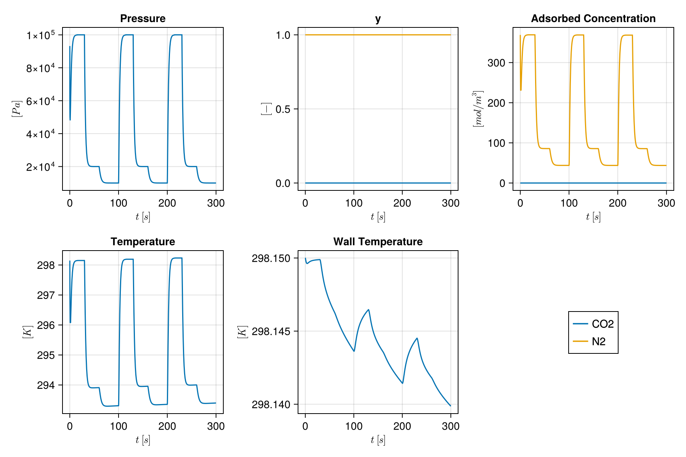
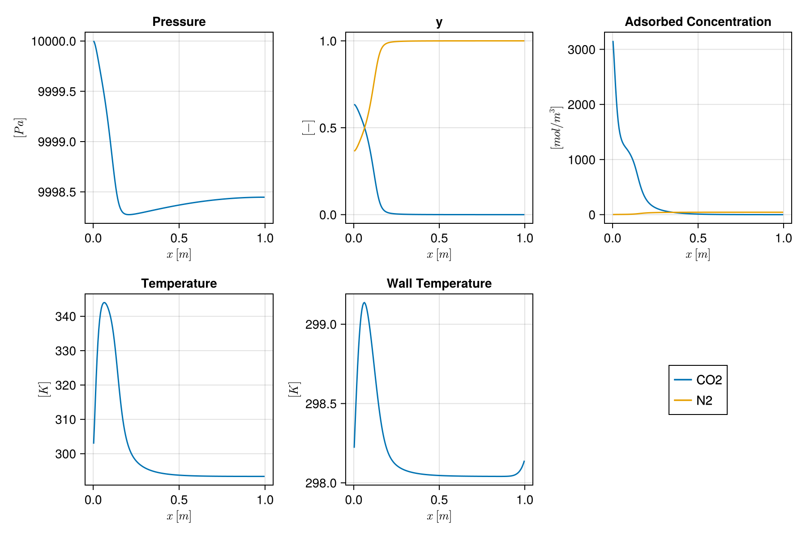
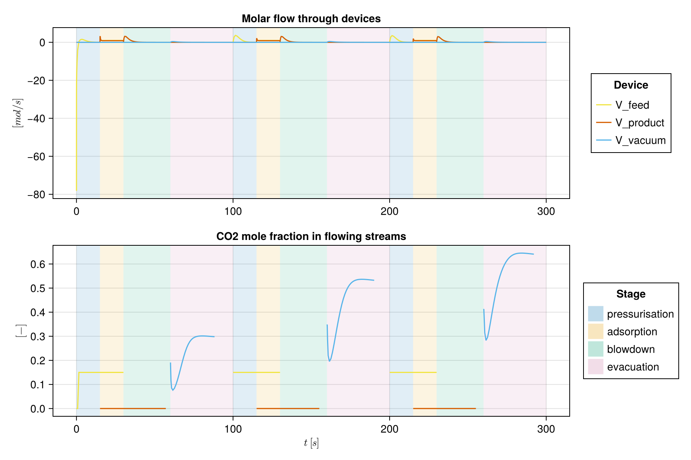

Cyclic Vacuum Swing Adsorption simulation
This example shows how to set up and run a cyclic vacuum swing adsorption simulation as described in Haghpanah et al. 2013.
A two-component flue gas (CO₂ and N₂) is fed into a column of zeolite 13X, which adsorbs CO₂ preferentially. The pressure in the column is then reduced to desorb the CO₂ and collect it. The cycle has four steps:
- Pressurisation: the top of the column is closed and flue gas enters at the bottom, bringing the column up to the high pressure $P_H$.
- Adsorption: flue gas is fed into the bottom at velocity $v_{feed}$, and nitrogen-rich gas leaves the top at $P_H$.
- Blowdown: the bottom is closed and the column is taken down to the intermediate pressure $P_I$ through the top.
- Evacuation: the top is closed and the column is evacuated through the bottom to the low pressure $P_L$, which gives the CO₂ product.
The process is described in four layers: the gas, the materials (adsorbent and column), the flowsheet (a bed and the devices connected to it) and the cycle (a list of steps). Adsorption on zeolite 13X follows a dual-site Langmuir isotherm.
import Mocca
using Mocca.Units1. Gas and feed
CO₂ and N₂ with the properties used by Haghpanah et al. Components are known to Mocca by name; the properties given here override its defaults. The first component is the one to capture.
gas = Mocca.Gas(["CO2", "N2"];
molar_masses = [44.01e-3, 28e-3], # kg/mol
heat_capacities = [697.5687, 1096.4], # J/(kg·K)
viscosity = 1.72e-5, # Pa·s
density = 1.22638310956, # kg/m³
diffusivity = 1.6e-5) # m²/s
feed = Mocca.Feed(gas; composition = (CO2 = 0.15, N2 = 0.85), temperature = 298.15, pressure = 1bar)Feed([0.15, 0.85], 298.15, 100000.0, [1.0e-10, 0.9999999999])2. Adsorbent and column
The zeolite 13X of the paper is in Mocca's library of adsorbents; the custom setup example builds one from its parameters.
adsorbent = Mocca.load_adsorbent("zeolite_13x_haghpanah_2013")
column = Mocca.Column(length = 1.0, radius = 0.1445, outer_radius = 0.162, porosity = 0.37,
axial_conductivity = 0.0903,
wall = Mocca.Wall(density = 7800.0, heat_capacity = 502.0, conductivity = 16.0),
inner_heat_transfer = 8.6, outer_heat_transfer = 2.5, ambient_temperature = 298.15)Column 1.0 m long, radius 0.1445 m (wall to 0.162 m), bed porosity 0.373. Flowsheet
A bed of 200 cells with three devices. Each device has a role, which sets its default boundary (the feed, the raffinate header, the vacuum line) and tells the steps which device to open:
feed ──V_feed──┐ ┌──V_product── raffinate
bottom Bed top
extract ──V_vacuum──┘fs = Mocca.Flowsheet(gas, feed)
Mocca.add_bed!(fs, :Bed, adsorbent, column; ncells = 200)
Mocca.add_device!(fs, :V_feed, :feed; at = (:Bed, :bottom))
Mocca.add_device!(fs, :V_product, :product; at = (:Bed, :top))
Mocca.add_device!(fs, :V_vacuum, :extract; at = (:Bed, :bottom))Flowsheet with 1 unit and 3 devices for CO2, N2
Bed: fixed bed of zeolite 13X, 200 cells
bottom V_feed (feed), from boundary at 1.0 bar; V_vacuum (extract), to boundary at 1.0 bar
top V_product (product), to boundary at 1.0 bar
4. Cycle
Pressures carry over from step to step: pressurisation starts where the evacuation left the bed, and blowdown where adsorption did. The feed velocity is interstitial.
cycle = Mocca.Cycle([
Mocca.Pressurise(15.0),
Mocca.Adsorb(15.0; velocity = 1.0),
Mocca.Blowdown(30.0; to = 0.2bar),
Mocca.Evacuate(40.0; to = 0.1bar),
])Cycle of 4 steps
pressurisation 15.0 s
adsorption 15.0 s
blowdown 30.0 s
evacuation 40.0 s
5. Process
The column starts full of nitrogen at 1 bar. By default a bed starts at the lowest pressure of its cycle.
process = Mocca.Process(fs, cycle; initial_state = Dict(:Bed => (pressure = 1bar,)))Process: CO2/N2 feed at 1.0 bar, 298.15 K, capturing CO2
Bed: fixed bed of zeolite 13X, 200 cells
bottom V_feed (feed), from boundary at 1.0 bar; V_vacuum (extract), to boundary at 0.1 bar
top V_product (product), to boundary at 1.0 bar
cycle of 4 stages, 100.0 s:
pressurisation 15.0 s V_feed
adsorption 15.0 s V_feed, V_product
blowdown 30.0 s V_product
evacuation 40.0 s V_vacuum
The same process is ready-made as Mocca.four_stage_vsa_process().
6. Simulate
We run 3 cycles for demonstration purposes; Mocca.cyclic_steady_state finds the steady state.
result = Mocca.simulate(process; cycles = 3, info_level = 0)Mocca.ProcessResult(Process("", Flowsheet(UnitNetwork(Dict{Symbol, Jutul.SimulationModel{<:Any, <:MoccaSystem, <:Any, <:Any}}(:V_vacuum => Jutul.SimulationModel{Jutul.DiscretizedDomain{Jutul.CartesianMesh{Tuple{Int64, Int64, Int64}, Tuple{Float64, Float64, Float64}, Vector{Float64}, Jutul.MeshEntityTags{Int64}}, Nothing, Dict{Jutul.JutulEntity, Int64}, Jutul.TrivialGlobalMap}, FlowDevice, Jutul.FullyImplicitFormulation, Jutul.DefaultContext, Jutul.DataDomain{Jutul.CartesianMesh{Tuple{Int64, Int64, Int64}, Tuple{Float64, Float64, Float64}, Vector{Float64}, Jutul.MeshEntityTags{Int64}}, Dict{Jutul.JutulEntity, Int64}, OrderedCollections.OrderedDict{Symbol, Any}}, OrderedCollections.OrderedDict{Symbol, Jutul.JutulVariables}, OrderedCollections.OrderedDict{Symbol, Jutul.JutulVariables}, OrderedCollections.OrderedDict{Symbol, Jutul.JutulVariables}, OrderedCollections.OrderedDict{Symbol, Jutul.JutulEquation}, Vector{Symbol}, OrderedCollections.OrderedDict{Symbol, Any}}(DiscretizedDomain with CartesianMesh (3D) with 1x1x1=1 cells
, FlowDevice(["CO2", "N2"]), Jutul.DefaultContext(Jutul.EquationMajorLayout(false), 9223372036854775807, 1), Jutul.FullyImplicitFormulation(), Jutul.DataDomain{Jutul.CartesianMesh{Tuple{Int64, Int64, Int64}, Tuple{Float64, Float64, Float64}, Vector{Float64}, Jutul.MeshEntityTags{Int64}}, Dict{Jutul.JutulEntity, Int64}, OrderedCollections.OrderedDict{Symbol, Any}}(CartesianMesh (3D) with 1x1x1=1 cells, Dict{Jutul.JutulEntity, Int64}(Jutul.NoEntity() => 1, Jutul.Cells() => 1, Jutul.BoundaryFaces() => 6, Jutul.Faces() => 0, Jutul.HalfFaces() => 0, Unit() => 1), OrderedCollections.OrderedDict{Symbol, Any}(:neighbors => (Matrix{Int64}(undef, 2, 0), Jutul.Faces()), :areas => (Float64[], Jutul.Faces()), :normals => (Matrix{Float64}(undef, 3, 0), Jutul.Faces()), :face_centroids => (Matrix{Float64}(undef, 3, 0), Jutul.Faces()), :cell_centroids => ([0.5; 0.5; 0.5;;], Jutul.Cells()), :volumes => ([1.0], Jutul.Cells()), :half_face_cells => (Int64[], Jutul.HalfFaces()), :half_face_faces => (Int64[], Jutul.HalfFaces()), :boundary_areas => ([1.0, 1.0, 1.0, 1.0, 1.0, 1.0], Jutul.BoundaryFaces()), :boundary_centroids => ([0.0 1.0 … 0.5 0.5; 0.5 0.5 … 0.5 0.5; 0.5 0.5 … 0.0 1.0], Jutul.BoundaryFaces())…)), OrderedCollections.OrderedDict{Symbol, Jutul.JutulVariables}(:InletPressure => Mocca.Pressure(1000.0, Inf, Inf, 100000.0), :InletTemperature => Mocca.Temperature(200.0, Inf, Inf), :InletComposition => Mocca.GasMoleFractions(Inf), :OutletPressure => Mocca.Pressure(1000.0, Inf, Inf, 100000.0), :OutletTemperature => Mocca.Temperature(200.0, Inf, Inf), :OutletComposition => Mocca.GasMoleFractions(Inf), :MolarFlow => Mocca.DeviceMolarFlow()), OrderedCollections.OrderedDict{Symbol, Jutul.JutulVariables}(), OrderedCollections.OrderedDict{Symbol, Jutul.JutulVariables}(), OrderedCollections.OrderedDict{Symbol, Jutul.JutulEquation}(:inlet_state => Mocca.PortStateEquation{1}(), :outlet_state => Mocca.PortStateEquation{2}(), :device_law => Mocca.DeviceLawEquation()), [:InletPressure, :InletTemperature, :InletComposition, :OutletPressure, :OutletTemperature, :OutletComposition, :MolarFlow], OrderedCollections.OrderedDict{Symbol, Any}(), 1), :Bed => Jutul.SimulationModel{Jutul.DiscretizedDomain{Jutul.CartesianMesh{Tuple{Int64, Int64, Int64}, Tuple{Float64, Float64, Float64}, Vector{Float64}, Jutul.MeshEntityTags{Int64}}, @NamedTuple{mass_flow::Jutul.PotentialFlow{:generic, Vector{Jutul.TPFA{Int64}}, Vector{Jutul.SPU{Int64}}, @NamedTuple{cells::Vector{Int64}, faces::Vector{Int64}, face_pos::Vector{Int64}, face_sign::Vector{Int64}}}}, Dict{Jutul.JutulEntity, Int64}, Jutul.TrivialGlobalMap}, FixedBed{2, Float64, DualSiteLangmuir{2, Float64}, LinearDrivingForce{Float64, Float64}, WithWall}, Jutul.FullyImplicitFormulation, Jutul.DefaultContext, Jutul.DataDomain{Jutul.CartesianMesh{Tuple{Int64, Int64, Int64}, Tuple{Float64, Float64, Float64}, Vector{Float64}, Jutul.MeshEntityTags{Int64}}, Dict{Jutul.JutulEntity, Int64}, OrderedCollections.OrderedDict{Symbol, Any}}, OrderedCollections.OrderedDict{Symbol, Jutul.JutulVariables}, OrderedCollections.OrderedDict{Symbol, Jutul.JutulVariables}, OrderedCollections.OrderedDict{Symbol, Jutul.JutulVariables}, OrderedCollections.OrderedDict{Symbol, Jutul.JutulEquation}, Vector{Symbol}, OrderedCollections.OrderedDict{Symbol, Any}}(DiscretizedDomain with CartesianMesh (3D) with 200x1x1=200 cells and discretizations for mass_flow
, FixedBed{2, Float64, DualSiteLangmuir{2, Float64}, LinearDrivingForce{Float64, Float64}, WithWall}(["CO2", "N2"], [0.04401, 0.028], [697.5687, 1096.4], [697.5687, 1096.4], DualSiteLangmuir{2, Float64}([3489.44, 6613.551], [8.65e-7, 2.5e-6], [-36641.21, -15800.0], [2872.35, 0.0], [2.63e-8, 0.0], [-35690.66, 0.0], [-38690.992593180876, -18278.95618937]), LinearDrivingForce{Float64, Float64}(1.6e-5, 3.0, 0.35, 0.002), WithWall()), Jutul.DefaultContext(Jutul.EquationMajorLayout(false), 9223372036854775807, 1), Jutul.FullyImplicitFormulation(), Jutul.DataDomain{Jutul.CartesianMesh{Tuple{Int64, Int64, Int64}, Tuple{Float64, Float64, Float64}, Vector{Float64}, Jutul.MeshEntityTags{Int64}}, Dict{Jutul.JutulEntity, Int64}, OrderedCollections.OrderedDict{Symbol, Any}}(CartesianMesh (3D) with 200x1x1=200 cells, Dict{Jutul.JutulEntity, Int64}(Jutul.NoEntity() => 1, Jutul.Cells() => 200, Jutul.BoundaryFaces() => 802, Jutul.Faces() => 199, Jutul.HalfFaces() => 398, Unit() => 1), OrderedCollections.OrderedDict{Symbol, Any}(:porosity => ([0.37, 0.37, 0.37, 0.37, 0.37, 0.37, 0.37, 0.37, 0.37, 0.37 … 0.37, 0.37, 0.37, 0.37, 0.37, 0.37, 0.37, 0.37, 0.37, 0.37], Jutul.Cells()), :permeability => ([3.403241790543378e-9, 3.403241790543378e-9, 3.403241790543378e-9, 3.403241790543378e-9, 3.403241790543378e-9, 3.403241790543378e-9, 3.403241790543378e-9, 3.403241790543378e-9, 3.403241790543378e-9, 3.403241790543378e-9 … 3.403241790543378e-9, 3.403241790543378e-9, 3.403241790543378e-9, 3.403241790543378e-9, 3.403241790543378e-9, 3.403241790543378e-9, 3.403241790543378e-9, 3.403241790543378e-9, 3.403241790543378e-9, 3.403241790543378e-9], Jutul.Cells()), :neighbors => ([1 2 … 198 199; 2 3 … 199 200], Jutul.Faces()), :areas => ([0.06559724000511828, 0.06559724000511828, 0.06559724000511828, 0.06559724000511828, 0.06559724000511828, 0.06559724000511828, 0.06559724000511828, 0.06559724000511828, 0.06559724000511828, 0.06559724000511828 … 0.06559724000511828, 0.06559724000511828, 0.06559724000511828, 0.06559724000511828, 0.06559724000511828, 0.06559724000511828, 0.06559724000511828, 0.06559724000511828, 0.06559724000511828, 0.06559724000511828], Jutul.Faces()), :normals => ([1.0 1.0 … 1.0 1.0; 0.0 0.0 … 0.0 0.0; 0.0 0.0 … 0.0 0.0], Jutul.Faces()), :face_centroids => ([0.005 0.01 … 0.9899999999999999 0.9949999999999999; 0.12805979072792353 0.12805979072792353 … 0.12805979072792353 0.12805979072792353; 0.12805979072792353 0.12805979072792353 … 0.12805979072792353 0.12805979072792353], Jutul.Faces()), :cell_centroids => ([0.0025 0.0075 … 0.9924999999999999 0.9974999999999999; 0.12805979072792353 0.12805979072792353 … 0.12805979072792353 0.12805979072792353; 0.12805979072792353 0.12805979072792353 … 0.12805979072792353 0.12805979072792353], Jutul.Cells()), :volumes => ([0.0003279862000255914, 0.0003279862000255914, 0.0003279862000255914, 0.0003279862000255914, 0.0003279862000255914, 0.0003279862000255914, 0.0003279862000255914, 0.0003279862000255914, 0.0003279862000255914, 0.0003279862000255914 … 0.0003279862000255914, 0.0003279862000255914, 0.0003279862000255914, 0.0003279862000255914, 0.0003279862000255914, 0.0003279862000255914, 0.0003279862000255914, 0.0003279862000255914, 0.0003279862000255914, 0.0003279862000255914], Jutul.Cells()), :half_face_cells => ([1, 2, 2, 3, 3, 4, 4, 5, 5, 6 … 195, 196, 196, 197, 197, 198, 198, 199, 199, 200], Jutul.HalfFaces()), :half_face_faces => ([1, 1, 2, 2, 3, 3, 4, 4, 5, 5 … 195, 195, 196, 196, 197, 197, 198, 198, 199, 199], Jutul.HalfFaces())…)), OrderedCollections.OrderedDict{Symbol, Jutul.JutulVariables}(:Pressure => Mocca.Pressure(1000.0, Inf, 0.2, 100000.0), :y => Mocca.GasMoleFractions(0.2), :AdsorbedConcentration => Mocca.AdsorbedConcentration(), :Temperature => Mocca.Temperature(200.0, Inf, 0.2), :WallTemperature => Mocca.Temperature(200.0, Inf, 0.2)), OrderedCollections.OrderedDict{Symbol, Jutul.JutulVariables}(:TotalMolarConcentration => Mocca.TotalMolarConcentration(), :MolarConcentration => Mocca.MolarConcentration(), :AverageMolarMass => Mocca.AverageMolarMass(), :ComponentMasses => Mocca.ComponentMasses(), :AdsorptionMassTransfer => Mocca.AdsorptionMassTransfer(), :AdsorbedLoading => Mocca.AdsorbedLoading(), :ColumnConservedEnergy => Mocca.ColumnEnergy(), :ConservedPressure => Mocca.ConservedPressure(), :WallConservedEnergy => Mocca.WallEnergy(), :ΔH => Mocca.EnthalpyChange()…), OrderedCollections.OrderedDict{Symbol, Jutul.JutulVariables}(:Transmissibilities => Mocca.Transmissibilities(), :SolidVolume => Mocca.BulkVolume(), :FluidVolume => Mocca.FluidVolume(), :WallAreaOut => Mocca.WallArea{:out}(), :WallAreaIn => Mocca.WallArea{:in}(), :CellDx => Mocca.CellDx(), :Permeability => Mocca.Permeability(), :ThermalConductivities => Mocca.ThermalConductivities(), :DispersionTransmissibilities => Mocca.DispersionTransmissibilities(), :AxialDispersion => Mocca.AxialDispersion()…), OrderedCollections.OrderedDict{Symbol, Jutul.JutulEquation}(:mass_conservation => Jutul.ConservationLaw{:ComponentMasses, Jutul.PotentialFlow{:generic, Vector{Jutul.TPFA{Int64}}, Vector{Jutul.SPU{Int64}}, @NamedTuple{cells::Vector{Int64}, faces::Vector{Int64}, face_pos::Vector{Int64}, face_sign::Vector{Int64}}}, Jutul.DefaultFlux, 2}(Jutul.PotentialFlow{:generic, Vector{Jutul.TPFA{Int64}}, Vector{Jutul.SPU{Int64}}, @NamedTuple{cells::Vector{Int64}, faces::Vector{Int64}, face_pos::Vector{Int64}, face_sign::Vector{Int64}}}(Jutul.TPFA{Int64}[Jutul.TPFA{Int64}(1, 2, 1), Jutul.TPFA{Int64}(2, 3, 1), Jutul.TPFA{Int64}(3, 4, 1), Jutul.TPFA{Int64}(4, 5, 1), Jutul.TPFA{Int64}(5, 6, 1), Jutul.TPFA{Int64}(6, 7, 1), Jutul.TPFA{Int64}(7, 8, 1), Jutul.TPFA{Int64}(8, 9, 1), Jutul.TPFA{Int64}(9, 10, 1), Jutul.TPFA{Int64}(10, 11, 1) … Jutul.TPFA{Int64}(190, 191, 1), Jutul.TPFA{Int64}(191, 192, 1), Jutul.TPFA{Int64}(192, 193, 1), Jutul.TPFA{Int64}(193, 194, 1), Jutul.TPFA{Int64}(194, 195, 1), Jutul.TPFA{Int64}(195, 196, 1), Jutul.TPFA{Int64}(196, 197, 1), Jutul.TPFA{Int64}(197, 198, 1), Jutul.TPFA{Int64}(198, 199, 1), Jutul.TPFA{Int64}(199, 200, 1)], Jutul.SPU{Int64}[Jutul.SPU{Int64}(1, 2), Jutul.SPU{Int64}(2, 3), Jutul.SPU{Int64}(3, 4), Jutul.SPU{Int64}(4, 5), Jutul.SPU{Int64}(5, 6), Jutul.SPU{Int64}(6, 7), Jutul.SPU{Int64}(7, 8), Jutul.SPU{Int64}(8, 9), Jutul.SPU{Int64}(9, 10), Jutul.SPU{Int64}(10, 11) … Jutul.SPU{Int64}(190, 191), Jutul.SPU{Int64}(191, 192), Jutul.SPU{Int64}(192, 193), Jutul.SPU{Int64}(193, 194), Jutul.SPU{Int64}(194, 195), Jutul.SPU{Int64}(195, 196), Jutul.SPU{Int64}(196, 197), Jutul.SPU{Int64}(197, 198), Jutul.SPU{Int64}(198, 199), Jutul.SPU{Int64}(199, 200)], (cells = [2, 1, 3, 2, 4, 3, 5, 4, 6, 5 … 196, 195, 197, 196, 198, 197, 199, 198, 200, 199], faces = [1, 1, 2, 2, 3, 3, 4, 4, 5, 5 … 195, 195, 196, 196, 197, 197, 198, 198, 199, 199], face_pos = [1, 2, 4, 6, 8, 10, 12, 14, 16, 18 … 382, 384, 386, 388, 390, 392, 394, 396, 398, 399], face_sign = [1, -1, 1, -1, 1, -1, 1, -1, 1, -1 … 1, -1, 1, -1, 1, -1, 1, -1, 1, -1])), Jutul.DefaultFlux()), :mass_transfer => Jutul.ConservationLaw{:AdsorbedLoading, Jutul.PotentialFlow{:generic, Vector{Jutul.TPFA{Int64}}, Vector{Jutul.SPU{Int64}}, @NamedTuple{cells::Vector{Int64}, faces::Vector{Int64}, face_pos::Vector{Int64}, face_sign::Vector{Int64}}}, Jutul.DefaultFlux, 2}(Jutul.PotentialFlow{:generic, Vector{Jutul.TPFA{Int64}}, Vector{Jutul.SPU{Int64}}, @NamedTuple{cells::Vector{Int64}, faces::Vector{Int64}, face_pos::Vector{Int64}, face_sign::Vector{Int64}}}(Jutul.TPFA{Int64}[Jutul.TPFA{Int64}(1, 2, 1), Jutul.TPFA{Int64}(2, 3, 1), Jutul.TPFA{Int64}(3, 4, 1), Jutul.TPFA{Int64}(4, 5, 1), Jutul.TPFA{Int64}(5, 6, 1), Jutul.TPFA{Int64}(6, 7, 1), Jutul.TPFA{Int64}(7, 8, 1), Jutul.TPFA{Int64}(8, 9, 1), Jutul.TPFA{Int64}(9, 10, 1), Jutul.TPFA{Int64}(10, 11, 1) … Jutul.TPFA{Int64}(190, 191, 1), Jutul.TPFA{Int64}(191, 192, 1), Jutul.TPFA{Int64}(192, 193, 1), Jutul.TPFA{Int64}(193, 194, 1), Jutul.TPFA{Int64}(194, 195, 1), Jutul.TPFA{Int64}(195, 196, 1), Jutul.TPFA{Int64}(196, 197, 1), Jutul.TPFA{Int64}(197, 198, 1), Jutul.TPFA{Int64}(198, 199, 1), Jutul.TPFA{Int64}(199, 200, 1)], Jutul.SPU{Int64}[Jutul.SPU{Int64}(1, 2), Jutul.SPU{Int64}(2, 3), Jutul.SPU{Int64}(3, 4), Jutul.SPU{Int64}(4, 5), Jutul.SPU{Int64}(5, 6), Jutul.SPU{Int64}(6, 7), Jutul.SPU{Int64}(7, 8), Jutul.SPU{Int64}(8, 9), Jutul.SPU{Int64}(9, 10), Jutul.SPU{Int64}(10, 11) … Jutul.SPU{Int64}(190, 191), Jutul.SPU{Int64}(191, 192), Jutul.SPU{Int64}(192, 193), Jutul.SPU{Int64}(193, 194), Jutul.SPU{Int64}(194, 195), Jutul.SPU{Int64}(195, 196), Jutul.SPU{Int64}(196, 197), Jutul.SPU{Int64}(197, 198), Jutul.SPU{Int64}(198, 199), Jutul.SPU{Int64}(199, 200)], (cells = [2, 1, 3, 2, 4, 3, 5, 4, 6, 5 … 196, 195, 197, 196, 198, 197, 199, 198, 200, 199], faces = [1, 1, 2, 2, 3, 3, 4, 4, 5, 5 … 195, 195, 196, 196, 197, 197, 198, 198, 199, 199], face_pos = [1, 2, 4, 6, 8, 10, 12, 14, 16, 18 … 382, 384, 386, 388, 390, 392, 394, 396, 398, 399], face_sign = [1, -1, 1, -1, 1, -1, 1, -1, 1, -1 … 1, -1, 1, -1, 1, -1, 1, -1, 1, -1])), Jutul.DefaultFlux()), :energy_column => Jutul.ConservationLaw{:ColumnConservedEnergy, Jutul.PotentialFlow{:generic, Vector{Jutul.TPFA{Int64}}, Vector{Jutul.SPU{Int64}}, @NamedTuple{cells::Vector{Int64}, faces::Vector{Int64}, face_pos::Vector{Int64}, face_sign::Vector{Int64}}}, Jutul.DefaultFlux, 1}(Jutul.PotentialFlow{:generic, Vector{Jutul.TPFA{Int64}}, Vector{Jutul.SPU{Int64}}, @NamedTuple{cells::Vector{Int64}, faces::Vector{Int64}, face_pos::Vector{Int64}, face_sign::Vector{Int64}}}(Jutul.TPFA{Int64}[Jutul.TPFA{Int64}(1, 2, 1), Jutul.TPFA{Int64}(2, 3, 1), Jutul.TPFA{Int64}(3, 4, 1), Jutul.TPFA{Int64}(4, 5, 1), Jutul.TPFA{Int64}(5, 6, 1), Jutul.TPFA{Int64}(6, 7, 1), Jutul.TPFA{Int64}(7, 8, 1), Jutul.TPFA{Int64}(8, 9, 1), Jutul.TPFA{Int64}(9, 10, 1), Jutul.TPFA{Int64}(10, 11, 1) … Jutul.TPFA{Int64}(190, 191, 1), Jutul.TPFA{Int64}(191, 192, 1), Jutul.TPFA{Int64}(192, 193, 1), Jutul.TPFA{Int64}(193, 194, 1), Jutul.TPFA{Int64}(194, 195, 1), Jutul.TPFA{Int64}(195, 196, 1), Jutul.TPFA{Int64}(196, 197, 1), Jutul.TPFA{Int64}(197, 198, 1), Jutul.TPFA{Int64}(198, 199, 1), Jutul.TPFA{Int64}(199, 200, 1)], Jutul.SPU{Int64}[Jutul.SPU{Int64}(1, 2), Jutul.SPU{Int64}(2, 3), Jutul.SPU{Int64}(3, 4), Jutul.SPU{Int64}(4, 5), Jutul.SPU{Int64}(5, 6), Jutul.SPU{Int64}(6, 7), Jutul.SPU{Int64}(7, 8), Jutul.SPU{Int64}(8, 9), Jutul.SPU{Int64}(9, 10), Jutul.SPU{Int64}(10, 11) … Jutul.SPU{Int64}(190, 191), Jutul.SPU{Int64}(191, 192), Jutul.SPU{Int64}(192, 193), Jutul.SPU{Int64}(193, 194), Jutul.SPU{Int64}(194, 195), Jutul.SPU{Int64}(195, 196), Jutul.SPU{Int64}(196, 197), Jutul.SPU{Int64}(197, 198), Jutul.SPU{Int64}(198, 199), Jutul.SPU{Int64}(199, 200)], (cells = [2, 1, 3, 2, 4, 3, 5, 4, 6, 5 … 196, 195, 197, 196, 198, 197, 199, 198, 200, 199], faces = [1, 1, 2, 2, 3, 3, 4, 4, 5, 5 … 195, 195, 196, 196, 197, 197, 198, 198, 199, 199], face_pos = [1, 2, 4, 6, 8, 10, 12, 14, 16, 18 … 382, 384, 386, 388, 390, 392, 394, 396, 398, 399], face_sign = [1, -1, 1, -1, 1, -1, 1, -1, 1, -1 … 1, -1, 1, -1, 1, -1, 1, -1, 1, -1])), Jutul.DefaultFlux()), :energy_wall => Jutul.ConservationLaw{:WallConservedEnergy, Jutul.PotentialFlow{:generic, Vector{Jutul.TPFA{Int64}}, Vector{Jutul.SPU{Int64}}, @NamedTuple{cells::Vector{Int64}, faces::Vector{Int64}, face_pos::Vector{Int64}, face_sign::Vector{Int64}}}, Jutul.DefaultFlux, 1}(Jutul.PotentialFlow{:generic, Vector{Jutul.TPFA{Int64}}, Vector{Jutul.SPU{Int64}}, @NamedTuple{cells::Vector{Int64}, faces::Vector{Int64}, face_pos::Vector{Int64}, face_sign::Vector{Int64}}}(Jutul.TPFA{Int64}[Jutul.TPFA{Int64}(1, 2, 1), Jutul.TPFA{Int64}(2, 3, 1), Jutul.TPFA{Int64}(3, 4, 1), Jutul.TPFA{Int64}(4, 5, 1), Jutul.TPFA{Int64}(5, 6, 1), Jutul.TPFA{Int64}(6, 7, 1), Jutul.TPFA{Int64}(7, 8, 1), Jutul.TPFA{Int64}(8, 9, 1), Jutul.TPFA{Int64}(9, 10, 1), Jutul.TPFA{Int64}(10, 11, 1) … Jutul.TPFA{Int64}(190, 191, 1), Jutul.TPFA{Int64}(191, 192, 1), Jutul.TPFA{Int64}(192, 193, 1), Jutul.TPFA{Int64}(193, 194, 1), Jutul.TPFA{Int64}(194, 195, 1), Jutul.TPFA{Int64}(195, 196, 1), Jutul.TPFA{Int64}(196, 197, 1), Jutul.TPFA{Int64}(197, 198, 1), Jutul.TPFA{Int64}(198, 199, 1), Jutul.TPFA{Int64}(199, 200, 1)], Jutul.SPU{Int64}[Jutul.SPU{Int64}(1, 2), Jutul.SPU{Int64}(2, 3), Jutul.SPU{Int64}(3, 4), Jutul.SPU{Int64}(4, 5), Jutul.SPU{Int64}(5, 6), Jutul.SPU{Int64}(6, 7), Jutul.SPU{Int64}(7, 8), Jutul.SPU{Int64}(8, 9), Jutul.SPU{Int64}(9, 10), Jutul.SPU{Int64}(10, 11) … Jutul.SPU{Int64}(190, 191), Jutul.SPU{Int64}(191, 192), Jutul.SPU{Int64}(192, 193), Jutul.SPU{Int64}(193, 194), Jutul.SPU{Int64}(194, 195), Jutul.SPU{Int64}(195, 196), Jutul.SPU{Int64}(196, 197), Jutul.SPU{Int64}(197, 198), Jutul.SPU{Int64}(198, 199), Jutul.SPU{Int64}(199, 200)], (cells = [2, 1, 3, 2, 4, 3, 5, 4, 6, 5 … 196, 195, 197, 196, 198, 197, 199, 198, 200, 199], faces = [1, 1, 2, 2, 3, 3, 4, 4, 5, 5 … 195, 195, 196, 196, 197, 197, 198, 198, 199, 199], face_pos = [1, 2, 4, 6, 8, 10, 12, 14, 16, 18 … 382, 384, 386, 388, 390, 392, 394, 396, 398, 399], face_sign = [1, -1, 1, -1, 1, -1, 1, -1, 1, -1 … 1, -1, 1, -1, 1, -1, 1, -1, 1, -1])), Jutul.DefaultFlux())), [:Pressure, :y, :AdsorbedConcentration, :Temperature, :WallTemperature], OrderedCollections.OrderedDict{Symbol, Any}(), 1), :V_feed => Jutul.SimulationModel{Jutul.DiscretizedDomain{Jutul.CartesianMesh{Tuple{Int64, Int64, Int64}, Tuple{Float64, Float64, Float64}, Vector{Float64}, Jutul.MeshEntityTags{Int64}}, Nothing, Dict{Jutul.JutulEntity, Int64}, Jutul.TrivialGlobalMap}, FlowDevice, Jutul.FullyImplicitFormulation, Jutul.DefaultContext, Jutul.DataDomain{Jutul.CartesianMesh{Tuple{Int64, Int64, Int64}, Tuple{Float64, Float64, Float64}, Vector{Float64}, Jutul.MeshEntityTags{Int64}}, Dict{Jutul.JutulEntity, Int64}, OrderedCollections.OrderedDict{Symbol, Any}}, OrderedCollections.OrderedDict{Symbol, Jutul.JutulVariables}, OrderedCollections.OrderedDict{Symbol, Jutul.JutulVariables}, OrderedCollections.OrderedDict{Symbol, Jutul.JutulVariables}, OrderedCollections.OrderedDict{Symbol, Jutul.JutulEquation}, Vector{Symbol}, OrderedCollections.OrderedDict{Symbol, Any}}(DiscretizedDomain with CartesianMesh (3D) with 1x1x1=1 cells
, FlowDevice(["CO2", "N2"]), Jutul.DefaultContext(Jutul.EquationMajorLayout(false), 9223372036854775807, 1), Jutul.FullyImplicitFormulation(), Jutul.DataDomain{Jutul.CartesianMesh{Tuple{Int64, Int64, Int64}, Tuple{Float64, Float64, Float64}, Vector{Float64}, Jutul.MeshEntityTags{Int64}}, Dict{Jutul.JutulEntity, Int64}, OrderedCollections.OrderedDict{Symbol, Any}}(CartesianMesh (3D) with 1x1x1=1 cells, Dict{Jutul.JutulEntity, Int64}(Jutul.NoEntity() => 1, Jutul.Cells() => 1, Jutul.BoundaryFaces() => 6, Jutul.Faces() => 0, Jutul.HalfFaces() => 0, Unit() => 1), OrderedCollections.OrderedDict{Symbol, Any}(:neighbors => (Matrix{Int64}(undef, 2, 0), Jutul.Faces()), :areas => (Float64[], Jutul.Faces()), :normals => (Matrix{Float64}(undef, 3, 0), Jutul.Faces()), :face_centroids => (Matrix{Float64}(undef, 3, 0), Jutul.Faces()), :cell_centroids => ([0.5; 0.5; 0.5;;], Jutul.Cells()), :volumes => ([1.0], Jutul.Cells()), :half_face_cells => (Int64[], Jutul.HalfFaces()), :half_face_faces => (Int64[], Jutul.HalfFaces()), :boundary_areas => ([1.0, 1.0, 1.0, 1.0, 1.0, 1.0], Jutul.BoundaryFaces()), :boundary_centroids => ([0.0 1.0 … 0.5 0.5; 0.5 0.5 … 0.5 0.5; 0.5 0.5 … 0.0 1.0], Jutul.BoundaryFaces())…)), OrderedCollections.OrderedDict{Symbol, Jutul.JutulVariables}(:InletPressure => Mocca.Pressure(1000.0, Inf, Inf, 100000.0), :InletTemperature => Mocca.Temperature(200.0, Inf, Inf), :InletComposition => Mocca.GasMoleFractions(Inf), :OutletPressure => Mocca.Pressure(1000.0, Inf, Inf, 100000.0), :OutletTemperature => Mocca.Temperature(200.0, Inf, Inf), :OutletComposition => Mocca.GasMoleFractions(Inf), :MolarFlow => Mocca.DeviceMolarFlow()), OrderedCollections.OrderedDict{Symbol, Jutul.JutulVariables}(), OrderedCollections.OrderedDict{Symbol, Jutul.JutulVariables}(), OrderedCollections.OrderedDict{Symbol, Jutul.JutulEquation}(:inlet_state => Mocca.PortStateEquation{1}(), :outlet_state => Mocca.PortStateEquation{2}(), :device_law => Mocca.DeviceLawEquation()), [:InletPressure, :InletTemperature, :InletComposition, :OutletPressure, :OutletTemperature, :OutletComposition, :MolarFlow], OrderedCollections.OrderedDict{Symbol, Any}(), 1), :V_product => Jutul.SimulationModel{Jutul.DiscretizedDomain{Jutul.CartesianMesh{Tuple{Int64, Int64, Int64}, Tuple{Float64, Float64, Float64}, Vector{Float64}, Jutul.MeshEntityTags{Int64}}, Nothing, Dict{Jutul.JutulEntity, Int64}, Jutul.TrivialGlobalMap}, FlowDevice, Jutul.FullyImplicitFormulation, Jutul.DefaultContext, Jutul.DataDomain{Jutul.CartesianMesh{Tuple{Int64, Int64, Int64}, Tuple{Float64, Float64, Float64}, Vector{Float64}, Jutul.MeshEntityTags{Int64}}, Dict{Jutul.JutulEntity, Int64}, OrderedCollections.OrderedDict{Symbol, Any}}, OrderedCollections.OrderedDict{Symbol, Jutul.JutulVariables}, OrderedCollections.OrderedDict{Symbol, Jutul.JutulVariables}, OrderedCollections.OrderedDict{Symbol, Jutul.JutulVariables}, OrderedCollections.OrderedDict{Symbol, Jutul.JutulEquation}, Vector{Symbol}, OrderedCollections.OrderedDict{Symbol, Any}}(DiscretizedDomain with CartesianMesh (3D) with 1x1x1=1 cells
, FlowDevice(["CO2", "N2"]), Jutul.DefaultContext(Jutul.EquationMajorLayout(false), 9223372036854775807, 1), Jutul.FullyImplicitFormulation(), Jutul.DataDomain{Jutul.CartesianMesh{Tuple{Int64, Int64, Int64}, Tuple{Float64, Float64, Float64}, Vector{Float64}, Jutul.MeshEntityTags{Int64}}, Dict{Jutul.JutulEntity, Int64}, OrderedCollections.OrderedDict{Symbol, Any}}(CartesianMesh (3D) with 1x1x1=1 cells, Dict{Jutul.JutulEntity, Int64}(Jutul.NoEntity() => 1, Jutul.Cells() => 1, Jutul.BoundaryFaces() => 6, Jutul.Faces() => 0, Jutul.HalfFaces() => 0, Unit() => 1), OrderedCollections.OrderedDict{Symbol, Any}(:neighbors => (Matrix{Int64}(undef, 2, 0), Jutul.Faces()), :areas => (Float64[], Jutul.Faces()), :normals => (Matrix{Float64}(undef, 3, 0), Jutul.Faces()), :face_centroids => (Matrix{Float64}(undef, 3, 0), Jutul.Faces()), :cell_centroids => ([0.5; 0.5; 0.5;;], Jutul.Cells()), :volumes => ([1.0], Jutul.Cells()), :half_face_cells => (Int64[], Jutul.HalfFaces()), :half_face_faces => (Int64[], Jutul.HalfFaces()), :boundary_areas => ([1.0, 1.0, 1.0, 1.0, 1.0, 1.0], Jutul.BoundaryFaces()), :boundary_centroids => ([0.0 1.0 … 0.5 0.5; 0.5 0.5 … 0.5 0.5; 0.5 0.5 … 0.0 1.0], Jutul.BoundaryFaces())…)), OrderedCollections.OrderedDict{Symbol, Jutul.JutulVariables}(:InletPressure => Mocca.Pressure(1000.0, Inf, Inf, 100000.0), :InletTemperature => Mocca.Temperature(200.0, Inf, Inf), :InletComposition => Mocca.GasMoleFractions(Inf), :OutletPressure => Mocca.Pressure(1000.0, Inf, Inf, 100000.0), :OutletTemperature => Mocca.Temperature(200.0, Inf, Inf), :OutletComposition => Mocca.GasMoleFractions(Inf), :MolarFlow => Mocca.DeviceMolarFlow()), OrderedCollections.OrderedDict{Symbol, Jutul.JutulVariables}(), OrderedCollections.OrderedDict{Symbol, Jutul.JutulVariables}(), OrderedCollections.OrderedDict{Symbol, Jutul.JutulEquation}(:inlet_state => Mocca.PortStateEquation{1}(), :outlet_state => Mocca.PortStateEquation{2}(), :device_law => Mocca.DeviceLawEquation()), [:InletPressure, :InletTemperature, :InletComposition, :OutletPressure, :OutletTemperature, :OutletComposition, :MolarFlow], OrderedCollections.OrderedDict{Symbol, Any}(), 1)), [:Bed, :V_feed, :V_product, :V_vacuum], AbstractConnection[StreamConnection(PortRef(:Bed, :bottom), PortRef(:V_feed, :outlet)), StreamConnection(PortRef(:Bed, :top), PortRef(:V_product, :inlet)), StreamConnection(PortRef(:Bed, :bottom), PortRef(:V_vacuum, :inlet))], Dict{PortRef, PortCondition}(PortRef(:V_product, :outlet) => PortCondition{Float64, Float64, Vector{Float64}}(100000.0, 298.15, [1.0e-10, 0.9999999999]), PortRef(:V_vacuum, :outlet) => PortCondition{Float64, Float64, Vector{Float64}}(10000.0, 298.15, [0.15, 0.85]), PortRef(:V_feed, :inlet) => PortCondition{Float64, Float64, Vector{Float64}}(100000.0, 298.15, [0.15, 0.85]))), Gas(["CO2", "N2"], [0.04401, 0.028], [697.5687, 1096.4], 1.72e-5, 1.22638310956, 1.6e-5), Feed([0.15, 0.85], 298.15, 100000.0, [1.0e-10, 0.9999999999]), Dict(:V_vacuum => :extract, :V_feed => :feed, :V_product => :product), Dict{Symbol, Mocca.BedSpec}(:Bed => Mocca.BedSpec(Adsorbent("zeolite 13X", Mocca.DualSiteLangmuirData(["CO2", "N2"], [3489.44, 6613.551], [8.65e-7, 2.5e-6], [-36641.21, -15800.0], [2872.35, 0.0], [2.63e-8, 0.0], [-35690.66, 0.0], 298.15, :volume), 1130.0, 1070.0, 0.002, 0.35, 3.0, Dict("N2" => 1096.4, "CO2" => 697.5687), nothing, "Haghpanah et al., Ind. Eng. Chem. Res. 52 (2013) 4249, doi:10.1021/ie302658y. Capacities per m³ of adsorbent."), Column(1.0, 0.1445, 0.162, 0.37, 0.0903, Wall(7800.0, 502.0, 16.0), 8.6, 2.5, 298.15), 200, WithWall(), :adsorption, nothing, nothing, 1.0)), Set(PortRef[PortRef(:V_product, :outlet), PortRef(:V_vacuum, :outlet), PortRef(:V_feed, :inlet)])), Cycle(Pair{String, Vector{Any}}["" => [Pressurise(15.0, nothing, nothing, :feed, nothing, nothing, nothing, nothing, ""), Adsorb(15.0, 1.0, nothing, nothing, nothing, nothing, nothing, nothing, nothing, ""), Blowdown(30.0, 20000.0, nothing, :top, nothing, nothing, nothing, nothing, ""), Evacuate(40.0, 10000.0, nothing, :bottom, nothing, nothing, nothing, nothing, "")]], nothing), TimeStepping(1.0, 0.05, :auto), Mocca.ProcessOptions(1, 101325.0, 0.72, 1.4, 0.5), Dict{Symbol, Any}(:Bed => (pressure = 100000.0,)), Dict{Symbol, Dict{Symbol, Any}}(), Any[], Jutul.MultiModel{nothing, Jutul.JutulStorage, Vector{Jutul.CrossTermPair}, Nothing, Jutul.DefaultContext, Dict{Symbol, Int64}, Vector{Jutul.DeviceExecutionMode}}(Jutul.JutulStorage(OrderedCollections.OrderedDict{Symbol, Any}(:Bed => Jutul.SimulationModel{Jutul.DiscretizedDomain{Jutul.CartesianMesh{Tuple{Int64, Int64, Int64}, Tuple{Float64, Float64, Float64}, Vector{Float64}, Jutul.MeshEntityTags{Int64}}, @NamedTuple{mass_flow::Jutul.PotentialFlow{:generic, Vector{Jutul.TPFA{Int64}}, Vector{Jutul.SPU{Int64}}, @NamedTuple{cells::Vector{Int64}, faces::Vector{Int64}, face_pos::Vector{Int64}, face_sign::Vector{Int64}}}}, Dict{Jutul.JutulEntity, Int64}, Jutul.TrivialGlobalMap}, FixedBed{2, Float64, DualSiteLangmuir{2, Float64}, LinearDrivingForce{Float64, Float64}, WithWall}, Jutul.FullyImplicitFormulation, Jutul.DefaultContext, Jutul.DataDomain{Jutul.CartesianMesh{Tuple{Int64, Int64, Int64}, Tuple{Float64, Float64, Float64}, Vector{Float64}, Jutul.MeshEntityTags{Int64}}, Dict{Jutul.JutulEntity, Int64}, OrderedCollections.OrderedDict{Symbol, Any}}, OrderedCollections.OrderedDict{Symbol, Jutul.JutulVariables}, OrderedCollections.OrderedDict{Symbol, Jutul.JutulVariables}, OrderedCollections.OrderedDict{Symbol, Jutul.JutulVariables}, OrderedCollections.OrderedDict{Symbol, Jutul.JutulEquation}, Vector{Symbol}, OrderedCollections.OrderedDict{Symbol, Any}}(DiscretizedDomain with CartesianMesh (3D) with 200x1x1=200 cells and discretizations for mass_flow
, FixedBed{2, Float64, DualSiteLangmuir{2, Float64}, LinearDrivingForce{Float64, Float64}, WithWall}(["CO2", "N2"], [0.04401, 0.028], [697.5687, 1096.4], [697.5687, 1096.4], DualSiteLangmuir{2, Float64}([3489.44, 6613.551], [8.65e-7, 2.5e-6], [-36641.21, -15800.0], [2872.35, 0.0], [2.63e-8, 0.0], [-35690.66, 0.0], [-38690.992593180876, -18278.95618937]), LinearDrivingForce{Float64, Float64}(1.6e-5, 3.0, 0.35, 0.002), WithWall()), Jutul.DefaultContext(Jutul.EquationMajorLayout(false), 9223372036854775807, 1), Jutul.FullyImplicitFormulation(), Jutul.DataDomain{Jutul.CartesianMesh{Tuple{Int64, Int64, Int64}, Tuple{Float64, Float64, Float64}, Vector{Float64}, Jutul.MeshEntityTags{Int64}}, Dict{Jutul.JutulEntity, Int64}, OrderedCollections.OrderedDict{Symbol, Any}}(CartesianMesh (3D) with 200x1x1=200 cells, Dict{Jutul.JutulEntity, Int64}(Jutul.NoEntity() => 1, Jutul.Cells() => 200, Jutul.BoundaryFaces() => 802, Jutul.Faces() => 199, Jutul.HalfFaces() => 398, Unit() => 1), OrderedCollections.OrderedDict{Symbol, Any}(:porosity => ([0.37, 0.37, 0.37, 0.37, 0.37, 0.37, 0.37, 0.37, 0.37, 0.37 … 0.37, 0.37, 0.37, 0.37, 0.37, 0.37, 0.37, 0.37, 0.37, 0.37], Jutul.Cells()), :permeability => ([3.403241790543378e-9, 3.403241790543378e-9, 3.403241790543378e-9, 3.403241790543378e-9, 3.403241790543378e-9, 3.403241790543378e-9, 3.403241790543378e-9, 3.403241790543378e-9, 3.403241790543378e-9, 3.403241790543378e-9 … 3.403241790543378e-9, 3.403241790543378e-9, 3.403241790543378e-9, 3.403241790543378e-9, 3.403241790543378e-9, 3.403241790543378e-9, 3.403241790543378e-9, 3.403241790543378e-9, 3.403241790543378e-9, 3.403241790543378e-9], Jutul.Cells()), :neighbors => ([1 2 … 198 199; 2 3 … 199 200], Jutul.Faces()), :areas => ([0.06559724000511828, 0.06559724000511828, 0.06559724000511828, 0.06559724000511828, 0.06559724000511828, 0.06559724000511828, 0.06559724000511828, 0.06559724000511828, 0.06559724000511828, 0.06559724000511828 … 0.06559724000511828, 0.06559724000511828, 0.06559724000511828, 0.06559724000511828, 0.06559724000511828, 0.06559724000511828, 0.06559724000511828, 0.06559724000511828, 0.06559724000511828, 0.06559724000511828], Jutul.Faces()), :normals => ([1.0 1.0 … 1.0 1.0; 0.0 0.0 … 0.0 0.0; 0.0 0.0 … 0.0 0.0], Jutul.Faces()), :face_centroids => ([0.005 0.01 … 0.9899999999999999 0.9949999999999999; 0.12805979072792353 0.12805979072792353 … 0.12805979072792353 0.12805979072792353; 0.12805979072792353 0.12805979072792353 … 0.12805979072792353 0.12805979072792353], Jutul.Faces()), :cell_centroids => ([0.0025 0.0075 … 0.9924999999999999 0.9974999999999999; 0.12805979072792353 0.12805979072792353 … 0.12805979072792353 0.12805979072792353; 0.12805979072792353 0.12805979072792353 … 0.12805979072792353 0.12805979072792353], Jutul.Cells()), :volumes => ([0.0003279862000255914, 0.0003279862000255914, 0.0003279862000255914, 0.0003279862000255914, 0.0003279862000255914, 0.0003279862000255914, 0.0003279862000255914, 0.0003279862000255914, 0.0003279862000255914, 0.0003279862000255914 … 0.0003279862000255914, 0.0003279862000255914, 0.0003279862000255914, 0.0003279862000255914, 0.0003279862000255914, 0.0003279862000255914, 0.0003279862000255914, 0.0003279862000255914, 0.0003279862000255914, 0.0003279862000255914], Jutul.Cells()), :half_face_cells => ([1, 2, 2, 3, 3, 4, 4, 5, 5, 6 … 195, 196, 196, 197, 197, 198, 198, 199, 199, 200], Jutul.HalfFaces()), :half_face_faces => ([1, 1, 2, 2, 3, 3, 4, 4, 5, 5 … 195, 195, 196, 196, 197, 197, 198, 198, 199, 199], Jutul.HalfFaces())…)), OrderedCollections.OrderedDict{Symbol, Jutul.JutulVariables}(:Pressure => Mocca.Pressure(1000.0, Inf, 0.2, 100000.0), :y => Mocca.GasMoleFractions(0.2), :AdsorbedConcentration => Mocca.AdsorbedConcentration(), :Temperature => Mocca.Temperature(200.0, Inf, 0.2), :WallTemperature => Mocca.Temperature(200.0, Inf, 0.2)), OrderedCollections.OrderedDict{Symbol, Jutul.JutulVariables}(:TotalMolarConcentration => Mocca.TotalMolarConcentration(), :MolarConcentration => Mocca.MolarConcentration(), :AverageMolarMass => Mocca.AverageMolarMass(), :ComponentMasses => Mocca.ComponentMasses(), :AdsorptionMassTransfer => Mocca.AdsorptionMassTransfer(), :AdsorbedLoading => Mocca.AdsorbedLoading(), :ColumnConservedEnergy => Mocca.ColumnEnergy(), :ConservedPressure => Mocca.ConservedPressure(), :WallConservedEnergy => Mocca.WallEnergy(), :ΔH => Mocca.EnthalpyChange()…), OrderedCollections.OrderedDict{Symbol, Jutul.JutulVariables}(:Transmissibilities => Mocca.Transmissibilities(), :SolidVolume => Mocca.BulkVolume(), :FluidVolume => Mocca.FluidVolume(), :WallAreaOut => Mocca.WallArea{:out}(), :WallAreaIn => Mocca.WallArea{:in}(), :CellDx => Mocca.CellDx(), :Permeability => Mocca.Permeability(), :ThermalConductivities => Mocca.ThermalConductivities(), :DispersionTransmissibilities => Mocca.DispersionTransmissibilities(), :AxialDispersion => Mocca.AxialDispersion()…), OrderedCollections.OrderedDict{Symbol, Jutul.JutulEquation}(:mass_conservation => Jutul.ConservationLaw{:ComponentMasses, Jutul.PotentialFlow{:generic, Vector{Jutul.TPFA{Int64}}, Vector{Jutul.SPU{Int64}}, @NamedTuple{cells::Vector{Int64}, faces::Vector{Int64}, face_pos::Vector{Int64}, face_sign::Vector{Int64}}}, Jutul.DefaultFlux, 2}(Jutul.PotentialFlow{:generic, Vector{Jutul.TPFA{Int64}}, Vector{Jutul.SPU{Int64}}, @NamedTuple{cells::Vector{Int64}, faces::Vector{Int64}, face_pos::Vector{Int64}, face_sign::Vector{Int64}}}(Jutul.TPFA{Int64}[Jutul.TPFA{Int64}(1, 2, 1), Jutul.TPFA{Int64}(2, 3, 1), Jutul.TPFA{Int64}(3, 4, 1), Jutul.TPFA{Int64}(4, 5, 1), Jutul.TPFA{Int64}(5, 6, 1), Jutul.TPFA{Int64}(6, 7, 1), Jutul.TPFA{Int64}(7, 8, 1), Jutul.TPFA{Int64}(8, 9, 1), Jutul.TPFA{Int64}(9, 10, 1), Jutul.TPFA{Int64}(10, 11, 1) … Jutul.TPFA{Int64}(190, 191, 1), Jutul.TPFA{Int64}(191, 192, 1), Jutul.TPFA{Int64}(192, 193, 1), Jutul.TPFA{Int64}(193, 194, 1), Jutul.TPFA{Int64}(194, 195, 1), Jutul.TPFA{Int64}(195, 196, 1), Jutul.TPFA{Int64}(196, 197, 1), Jutul.TPFA{Int64}(197, 198, 1), Jutul.TPFA{Int64}(198, 199, 1), Jutul.TPFA{Int64}(199, 200, 1)], Jutul.SPU{Int64}[Jutul.SPU{Int64}(1, 2), Jutul.SPU{Int64}(2, 3), Jutul.SPU{Int64}(3, 4), Jutul.SPU{Int64}(4, 5), Jutul.SPU{Int64}(5, 6), Jutul.SPU{Int64}(6, 7), Jutul.SPU{Int64}(7, 8), Jutul.SPU{Int64}(8, 9), Jutul.SPU{Int64}(9, 10), Jutul.SPU{Int64}(10, 11) … Jutul.SPU{Int64}(190, 191), Jutul.SPU{Int64}(191, 192), Jutul.SPU{Int64}(192, 193), Jutul.SPU{Int64}(193, 194), Jutul.SPU{Int64}(194, 195), Jutul.SPU{Int64}(195, 196), Jutul.SPU{Int64}(196, 197), Jutul.SPU{Int64}(197, 198), Jutul.SPU{Int64}(198, 199), Jutul.SPU{Int64}(199, 200)], (cells = [2, 1, 3, 2, 4, 3, 5, 4, 6, 5 … 196, 195, 197, 196, 198, 197, 199, 198, 200, 199], faces = [1, 1, 2, 2, 3, 3, 4, 4, 5, 5 … 195, 195, 196, 196, 197, 197, 198, 198, 199, 199], face_pos = [1, 2, 4, 6, 8, 10, 12, 14, 16, 18 … 382, 384, 386, 388, 390, 392, 394, 396, 398, 399], face_sign = [1, -1, 1, -1, 1, -1, 1, -1, 1, -1 … 1, -1, 1, -1, 1, -1, 1, -1, 1, -1])), Jutul.DefaultFlux()), :mass_transfer => Jutul.ConservationLaw{:AdsorbedLoading, Jutul.PotentialFlow{:generic, Vector{Jutul.TPFA{Int64}}, Vector{Jutul.SPU{Int64}}, @NamedTuple{cells::Vector{Int64}, faces::Vector{Int64}, face_pos::Vector{Int64}, face_sign::Vector{Int64}}}, Jutul.DefaultFlux, 2}(Jutul.PotentialFlow{:generic, Vector{Jutul.TPFA{Int64}}, Vector{Jutul.SPU{Int64}}, @NamedTuple{cells::Vector{Int64}, faces::Vector{Int64}, face_pos::Vector{Int64}, face_sign::Vector{Int64}}}(Jutul.TPFA{Int64}[Jutul.TPFA{Int64}(1, 2, 1), Jutul.TPFA{Int64}(2, 3, 1), Jutul.TPFA{Int64}(3, 4, 1), Jutul.TPFA{Int64}(4, 5, 1), Jutul.TPFA{Int64}(5, 6, 1), Jutul.TPFA{Int64}(6, 7, 1), Jutul.TPFA{Int64}(7, 8, 1), Jutul.TPFA{Int64}(8, 9, 1), Jutul.TPFA{Int64}(9, 10, 1), Jutul.TPFA{Int64}(10, 11, 1) … Jutul.TPFA{Int64}(190, 191, 1), Jutul.TPFA{Int64}(191, 192, 1), Jutul.TPFA{Int64}(192, 193, 1), Jutul.TPFA{Int64}(193, 194, 1), Jutul.TPFA{Int64}(194, 195, 1), Jutul.TPFA{Int64}(195, 196, 1), Jutul.TPFA{Int64}(196, 197, 1), Jutul.TPFA{Int64}(197, 198, 1), Jutul.TPFA{Int64}(198, 199, 1), Jutul.TPFA{Int64}(199, 200, 1)], Jutul.SPU{Int64}[Jutul.SPU{Int64}(1, 2), Jutul.SPU{Int64}(2, 3), Jutul.SPU{Int64}(3, 4), Jutul.SPU{Int64}(4, 5), Jutul.SPU{Int64}(5, 6), Jutul.SPU{Int64}(6, 7), Jutul.SPU{Int64}(7, 8), Jutul.SPU{Int64}(8, 9), Jutul.SPU{Int64}(9, 10), Jutul.SPU{Int64}(10, 11) … Jutul.SPU{Int64}(190, 191), Jutul.SPU{Int64}(191, 192), Jutul.SPU{Int64}(192, 193), Jutul.SPU{Int64}(193, 194), Jutul.SPU{Int64}(194, 195), Jutul.SPU{Int64}(195, 196), Jutul.SPU{Int64}(196, 197), Jutul.SPU{Int64}(197, 198), Jutul.SPU{Int64}(198, 199), Jutul.SPU{Int64}(199, 200)], (cells = [2, 1, 3, 2, 4, 3, 5, 4, 6, 5 … 196, 195, 197, 196, 198, 197, 199, 198, 200, 199], faces = [1, 1, 2, 2, 3, 3, 4, 4, 5, 5 … 195, 195, 196, 196, 197, 197, 198, 198, 199, 199], face_pos = [1, 2, 4, 6, 8, 10, 12, 14, 16, 18 … 382, 384, 386, 388, 390, 392, 394, 396, 398, 399], face_sign = [1, -1, 1, -1, 1, -1, 1, -1, 1, -1 … 1, -1, 1, -1, 1, -1, 1, -1, 1, -1])), Jutul.DefaultFlux()), :energy_column => Jutul.ConservationLaw{:ColumnConservedEnergy, Jutul.PotentialFlow{:generic, Vector{Jutul.TPFA{Int64}}, Vector{Jutul.SPU{Int64}}, @NamedTuple{cells::Vector{Int64}, faces::Vector{Int64}, face_pos::Vector{Int64}, face_sign::Vector{Int64}}}, Jutul.DefaultFlux, 1}(Jutul.PotentialFlow{:generic, Vector{Jutul.TPFA{Int64}}, Vector{Jutul.SPU{Int64}}, @NamedTuple{cells::Vector{Int64}, faces::Vector{Int64}, face_pos::Vector{Int64}, face_sign::Vector{Int64}}}(Jutul.TPFA{Int64}[Jutul.TPFA{Int64}(1, 2, 1), Jutul.TPFA{Int64}(2, 3, 1), Jutul.TPFA{Int64}(3, 4, 1), Jutul.TPFA{Int64}(4, 5, 1), Jutul.TPFA{Int64}(5, 6, 1), Jutul.TPFA{Int64}(6, 7, 1), Jutul.TPFA{Int64}(7, 8, 1), Jutul.TPFA{Int64}(8, 9, 1), Jutul.TPFA{Int64}(9, 10, 1), Jutul.TPFA{Int64}(10, 11, 1) … Jutul.TPFA{Int64}(190, 191, 1), Jutul.TPFA{Int64}(191, 192, 1), Jutul.TPFA{Int64}(192, 193, 1), Jutul.TPFA{Int64}(193, 194, 1), Jutul.TPFA{Int64}(194, 195, 1), Jutul.TPFA{Int64}(195, 196, 1), Jutul.TPFA{Int64}(196, 197, 1), Jutul.TPFA{Int64}(197, 198, 1), Jutul.TPFA{Int64}(198, 199, 1), Jutul.TPFA{Int64}(199, 200, 1)], Jutul.SPU{Int64}[Jutul.SPU{Int64}(1, 2), Jutul.SPU{Int64}(2, 3), Jutul.SPU{Int64}(3, 4), Jutul.SPU{Int64}(4, 5), Jutul.SPU{Int64}(5, 6), Jutul.SPU{Int64}(6, 7), Jutul.SPU{Int64}(7, 8), Jutul.SPU{Int64}(8, 9), Jutul.SPU{Int64}(9, 10), Jutul.SPU{Int64}(10, 11) … Jutul.SPU{Int64}(190, 191), Jutul.SPU{Int64}(191, 192), Jutul.SPU{Int64}(192, 193), Jutul.SPU{Int64}(193, 194), Jutul.SPU{Int64}(194, 195), Jutul.SPU{Int64}(195, 196), Jutul.SPU{Int64}(196, 197), Jutul.SPU{Int64}(197, 198), Jutul.SPU{Int64}(198, 199), Jutul.SPU{Int64}(199, 200)], (cells = [2, 1, 3, 2, 4, 3, 5, 4, 6, 5 … 196, 195, 197, 196, 198, 197, 199, 198, 200, 199], faces = [1, 1, 2, 2, 3, 3, 4, 4, 5, 5 … 195, 195, 196, 196, 197, 197, 198, 198, 199, 199], face_pos = [1, 2, 4, 6, 8, 10, 12, 14, 16, 18 … 382, 384, 386, 388, 390, 392, 394, 396, 398, 399], face_sign = [1, -1, 1, -1, 1, -1, 1, -1, 1, -1 … 1, -1, 1, -1, 1, -1, 1, -1, 1, -1])), Jutul.DefaultFlux()), :energy_wall => Jutul.ConservationLaw{:WallConservedEnergy, Jutul.PotentialFlow{:generic, Vector{Jutul.TPFA{Int64}}, Vector{Jutul.SPU{Int64}}, @NamedTuple{cells::Vector{Int64}, faces::Vector{Int64}, face_pos::Vector{Int64}, face_sign::Vector{Int64}}}, Jutul.DefaultFlux, 1}(Jutul.PotentialFlow{:generic, Vector{Jutul.TPFA{Int64}}, Vector{Jutul.SPU{Int64}}, @NamedTuple{cells::Vector{Int64}, faces::Vector{Int64}, face_pos::Vector{Int64}, face_sign::Vector{Int64}}}(Jutul.TPFA{Int64}[Jutul.TPFA{Int64}(1, 2, 1), Jutul.TPFA{Int64}(2, 3, 1), Jutul.TPFA{Int64}(3, 4, 1), Jutul.TPFA{Int64}(4, 5, 1), Jutul.TPFA{Int64}(5, 6, 1), Jutul.TPFA{Int64}(6, 7, 1), Jutul.TPFA{Int64}(7, 8, 1), Jutul.TPFA{Int64}(8, 9, 1), Jutul.TPFA{Int64}(9, 10, 1), Jutul.TPFA{Int64}(10, 11, 1) … Jutul.TPFA{Int64}(190, 191, 1), Jutul.TPFA{Int64}(191, 192, 1), Jutul.TPFA{Int64}(192, 193, 1), Jutul.TPFA{Int64}(193, 194, 1), Jutul.TPFA{Int64}(194, 195, 1), Jutul.TPFA{Int64}(195, 196, 1), Jutul.TPFA{Int64}(196, 197, 1), Jutul.TPFA{Int64}(197, 198, 1), Jutul.TPFA{Int64}(198, 199, 1), Jutul.TPFA{Int64}(199, 200, 1)], Jutul.SPU{Int64}[Jutul.SPU{Int64}(1, 2), Jutul.SPU{Int64}(2, 3), Jutul.SPU{Int64}(3, 4), Jutul.SPU{Int64}(4, 5), Jutul.SPU{Int64}(5, 6), Jutul.SPU{Int64}(6, 7), Jutul.SPU{Int64}(7, 8), Jutul.SPU{Int64}(8, 9), Jutul.SPU{Int64}(9, 10), Jutul.SPU{Int64}(10, 11) … Jutul.SPU{Int64}(190, 191), Jutul.SPU{Int64}(191, 192), Jutul.SPU{Int64}(192, 193), Jutul.SPU{Int64}(193, 194), Jutul.SPU{Int64}(194, 195), Jutul.SPU{Int64}(195, 196), Jutul.SPU{Int64}(196, 197), Jutul.SPU{Int64}(197, 198), Jutul.SPU{Int64}(198, 199), Jutul.SPU{Int64}(199, 200)], (cells = [2, 1, 3, 2, 4, 3, 5, 4, 6, 5 … 196, 195, 197, 196, 198, 197, 199, 198, 200, 199], faces = [1, 1, 2, 2, 3, 3, 4, 4, 5, 5 … 195, 195, 196, 196, 197, 197, 198, 198, 199, 199], face_pos = [1, 2, 4, 6, 8, 10, 12, 14, 16, 18 … 382, 384, 386, 388, 390, 392, 394, 396, 398, 399], face_sign = [1, -1, 1, -1, 1, -1, 1, -1, 1, -1 … 1, -1, 1, -1, 1, -1, 1, -1, 1, -1])), Jutul.DefaultFlux())), [:Pressure, :y, :AdsorbedConcentration, :Temperature, :WallTemperature], OrderedCollections.OrderedDict{Symbol, Any}(), 1), :V_feed => Jutul.SimulationModel{Jutul.DiscretizedDomain{Jutul.CartesianMesh{Tuple{Int64, Int64, Int64}, Tuple{Float64, Float64, Float64}, Vector{Float64}, Jutul.MeshEntityTags{Int64}}, Nothing, Dict{Jutul.JutulEntity, Int64}, Jutul.TrivialGlobalMap}, FlowDevice, Jutul.FullyImplicitFormulation, Jutul.DefaultContext, Jutul.DataDomain{Jutul.CartesianMesh{Tuple{Int64, Int64, Int64}, Tuple{Float64, Float64, Float64}, Vector{Float64}, Jutul.MeshEntityTags{Int64}}, Dict{Jutul.JutulEntity, Int64}, OrderedCollections.OrderedDict{Symbol, Any}}, OrderedCollections.OrderedDict{Symbol, Jutul.JutulVariables}, OrderedCollections.OrderedDict{Symbol, Jutul.JutulVariables}, OrderedCollections.OrderedDict{Symbol, Jutul.JutulVariables}, OrderedCollections.OrderedDict{Symbol, Jutul.JutulEquation}, Vector{Symbol}, OrderedCollections.OrderedDict{Symbol, Any}}(DiscretizedDomain with CartesianMesh (3D) with 1x1x1=1 cells
, FlowDevice(["CO2", "N2"]), Jutul.DefaultContext(Jutul.EquationMajorLayout(false), 9223372036854775807, 1), Jutul.FullyImplicitFormulation(), Jutul.DataDomain{Jutul.CartesianMesh{Tuple{Int64, Int64, Int64}, Tuple{Float64, Float64, Float64}, Vector{Float64}, Jutul.MeshEntityTags{Int64}}, Dict{Jutul.JutulEntity, Int64}, OrderedCollections.OrderedDict{Symbol, Any}}(CartesianMesh (3D) with 1x1x1=1 cells, Dict{Jutul.JutulEntity, Int64}(Jutul.NoEntity() => 1, Jutul.Cells() => 1, Jutul.BoundaryFaces() => 6, Jutul.Faces() => 0, Jutul.HalfFaces() => 0, Unit() => 1), OrderedCollections.OrderedDict{Symbol, Any}(:neighbors => (Matrix{Int64}(undef, 2, 0), Jutul.Faces()), :areas => (Float64[], Jutul.Faces()), :normals => (Matrix{Float64}(undef, 3, 0), Jutul.Faces()), :face_centroids => (Matrix{Float64}(undef, 3, 0), Jutul.Faces()), :cell_centroids => ([0.5; 0.5; 0.5;;], Jutul.Cells()), :volumes => ([1.0], Jutul.Cells()), :half_face_cells => (Int64[], Jutul.HalfFaces()), :half_face_faces => (Int64[], Jutul.HalfFaces()), :boundary_areas => ([1.0, 1.0, 1.0, 1.0, 1.0, 1.0], Jutul.BoundaryFaces()), :boundary_centroids => ([0.0 1.0 … 0.5 0.5; 0.5 0.5 … 0.5 0.5; 0.5 0.5 … 0.0 1.0], Jutul.BoundaryFaces())…)), OrderedCollections.OrderedDict{Symbol, Jutul.JutulVariables}(:InletPressure => Mocca.Pressure(1000.0, Inf, Inf, 100000.0), :InletTemperature => Mocca.Temperature(200.0, Inf, Inf), :InletComposition => Mocca.GasMoleFractions(Inf), :OutletPressure => Mocca.Pressure(1000.0, Inf, Inf, 100000.0), :OutletTemperature => Mocca.Temperature(200.0, Inf, Inf), :OutletComposition => Mocca.GasMoleFractions(Inf), :MolarFlow => Mocca.DeviceMolarFlow()), OrderedCollections.OrderedDict{Symbol, Jutul.JutulVariables}(), OrderedCollections.OrderedDict{Symbol, Jutul.JutulVariables}(), OrderedCollections.OrderedDict{Symbol, Jutul.JutulEquation}(:inlet_state => Mocca.PortStateEquation{1}(), :outlet_state => Mocca.PortStateEquation{2}(), :device_law => Mocca.DeviceLawEquation()), [:InletPressure, :InletTemperature, :InletComposition, :OutletPressure, :OutletTemperature, :OutletComposition, :MolarFlow], OrderedCollections.OrderedDict{Symbol, Any}(), 1), :V_product => Jutul.SimulationModel{Jutul.DiscretizedDomain{Jutul.CartesianMesh{Tuple{Int64, Int64, Int64}, Tuple{Float64, Float64, Float64}, Vector{Float64}, Jutul.MeshEntityTags{Int64}}, Nothing, Dict{Jutul.JutulEntity, Int64}, Jutul.TrivialGlobalMap}, FlowDevice, Jutul.FullyImplicitFormulation, Jutul.DefaultContext, Jutul.DataDomain{Jutul.CartesianMesh{Tuple{Int64, Int64, Int64}, Tuple{Float64, Float64, Float64}, Vector{Float64}, Jutul.MeshEntityTags{Int64}}, Dict{Jutul.JutulEntity, Int64}, OrderedCollections.OrderedDict{Symbol, Any}}, OrderedCollections.OrderedDict{Symbol, Jutul.JutulVariables}, OrderedCollections.OrderedDict{Symbol, Jutul.JutulVariables}, OrderedCollections.OrderedDict{Symbol, Jutul.JutulVariables}, OrderedCollections.OrderedDict{Symbol, Jutul.JutulEquation}, Vector{Symbol}, OrderedCollections.OrderedDict{Symbol, Any}}(DiscretizedDomain with CartesianMesh (3D) with 1x1x1=1 cells
, FlowDevice(["CO2", "N2"]), Jutul.DefaultContext(Jutul.EquationMajorLayout(false), 9223372036854775807, 1), Jutul.FullyImplicitFormulation(), Jutul.DataDomain{Jutul.CartesianMesh{Tuple{Int64, Int64, Int64}, Tuple{Float64, Float64, Float64}, Vector{Float64}, Jutul.MeshEntityTags{Int64}}, Dict{Jutul.JutulEntity, Int64}, OrderedCollections.OrderedDict{Symbol, Any}}(CartesianMesh (3D) with 1x1x1=1 cells, Dict{Jutul.JutulEntity, Int64}(Jutul.NoEntity() => 1, Jutul.Cells() => 1, Jutul.BoundaryFaces() => 6, Jutul.Faces() => 0, Jutul.HalfFaces() => 0, Unit() => 1), OrderedCollections.OrderedDict{Symbol, Any}(:neighbors => (Matrix{Int64}(undef, 2, 0), Jutul.Faces()), :areas => (Float64[], Jutul.Faces()), :normals => (Matrix{Float64}(undef, 3, 0), Jutul.Faces()), :face_centroids => (Matrix{Float64}(undef, 3, 0), Jutul.Faces()), :cell_centroids => ([0.5; 0.5; 0.5;;], Jutul.Cells()), :volumes => ([1.0], Jutul.Cells()), :half_face_cells => (Int64[], Jutul.HalfFaces()), :half_face_faces => (Int64[], Jutul.HalfFaces()), :boundary_areas => ([1.0, 1.0, 1.0, 1.0, 1.0, 1.0], Jutul.BoundaryFaces()), :boundary_centroids => ([0.0 1.0 … 0.5 0.5; 0.5 0.5 … 0.5 0.5; 0.5 0.5 … 0.0 1.0], Jutul.BoundaryFaces())…)), OrderedCollections.OrderedDict{Symbol, Jutul.JutulVariables}(:InletPressure => Mocca.Pressure(1000.0, Inf, Inf, 100000.0), :InletTemperature => Mocca.Temperature(200.0, Inf, Inf), :InletComposition => Mocca.GasMoleFractions(Inf), :OutletPressure => Mocca.Pressure(1000.0, Inf, Inf, 100000.0), :OutletTemperature => Mocca.Temperature(200.0, Inf, Inf), :OutletComposition => Mocca.GasMoleFractions(Inf), :MolarFlow => Mocca.DeviceMolarFlow()), OrderedCollections.OrderedDict{Symbol, Jutul.JutulVariables}(), OrderedCollections.OrderedDict{Symbol, Jutul.JutulVariables}(), OrderedCollections.OrderedDict{Symbol, Jutul.JutulEquation}(:inlet_state => Mocca.PortStateEquation{1}(), :outlet_state => Mocca.PortStateEquation{2}(), :device_law => Mocca.DeviceLawEquation()), [:InletPressure, :InletTemperature, :InletComposition, :OutletPressure, :OutletTemperature, :OutletComposition, :MolarFlow], OrderedCollections.OrderedDict{Symbol, Any}(), 1), :V_vacuum => Jutul.SimulationModel{Jutul.DiscretizedDomain{Jutul.CartesianMesh{Tuple{Int64, Int64, Int64}, Tuple{Float64, Float64, Float64}, Vector{Float64}, Jutul.MeshEntityTags{Int64}}, Nothing, Dict{Jutul.JutulEntity, Int64}, Jutul.TrivialGlobalMap}, FlowDevice, Jutul.FullyImplicitFormulation, Jutul.DefaultContext, Jutul.DataDomain{Jutul.CartesianMesh{Tuple{Int64, Int64, Int64}, Tuple{Float64, Float64, Float64}, Vector{Float64}, Jutul.MeshEntityTags{Int64}}, Dict{Jutul.JutulEntity, Int64}, OrderedCollections.OrderedDict{Symbol, Any}}, OrderedCollections.OrderedDict{Symbol, Jutul.JutulVariables}, OrderedCollections.OrderedDict{Symbol, Jutul.JutulVariables}, OrderedCollections.OrderedDict{Symbol, Jutul.JutulVariables}, OrderedCollections.OrderedDict{Symbol, Jutul.JutulEquation}, Vector{Symbol}, OrderedCollections.OrderedDict{Symbol, Any}}(DiscretizedDomain with CartesianMesh (3D) with 1x1x1=1 cells
, FlowDevice(["CO2", "N2"]), Jutul.DefaultContext(Jutul.EquationMajorLayout(false), 9223372036854775807, 1), Jutul.FullyImplicitFormulation(), Jutul.DataDomain{Jutul.CartesianMesh{Tuple{Int64, Int64, Int64}, Tuple{Float64, Float64, Float64}, Vector{Float64}, Jutul.MeshEntityTags{Int64}}, Dict{Jutul.JutulEntity, Int64}, OrderedCollections.OrderedDict{Symbol, Any}}(CartesianMesh (3D) with 1x1x1=1 cells, Dict{Jutul.JutulEntity, Int64}(Jutul.NoEntity() => 1, Jutul.Cells() => 1, Jutul.BoundaryFaces() => 6, Jutul.Faces() => 0, Jutul.HalfFaces() => 0, Unit() => 1), OrderedCollections.OrderedDict{Symbol, Any}(:neighbors => (Matrix{Int64}(undef, 2, 0), Jutul.Faces()), :areas => (Float64[], Jutul.Faces()), :normals => (Matrix{Float64}(undef, 3, 0), Jutul.Faces()), :face_centroids => (Matrix{Float64}(undef, 3, 0), Jutul.Faces()), :cell_centroids => ([0.5; 0.5; 0.5;;], Jutul.Cells()), :volumes => ([1.0], Jutul.Cells()), :half_face_cells => (Int64[], Jutul.HalfFaces()), :half_face_faces => (Int64[], Jutul.HalfFaces()), :boundary_areas => ([1.0, 1.0, 1.0, 1.0, 1.0, 1.0], Jutul.BoundaryFaces()), :boundary_centroids => ([0.0 1.0 … 0.5 0.5; 0.5 0.5 … 0.5 0.5; 0.5 0.5 … 0.0 1.0], Jutul.BoundaryFaces())…)), OrderedCollections.OrderedDict{Symbol, Jutul.JutulVariables}(:InletPressure => Mocca.Pressure(1000.0, Inf, Inf, 100000.0), :InletTemperature => Mocca.Temperature(200.0, Inf, Inf), :InletComposition => Mocca.GasMoleFractions(Inf), :OutletPressure => Mocca.Pressure(1000.0, Inf, Inf, 100000.0), :OutletTemperature => Mocca.Temperature(200.0, Inf, Inf), :OutletComposition => Mocca.GasMoleFractions(Inf), :MolarFlow => Mocca.DeviceMolarFlow()), OrderedCollections.OrderedDict{Symbol, Jutul.JutulVariables}(), OrderedCollections.OrderedDict{Symbol, Jutul.JutulVariables}(), OrderedCollections.OrderedDict{Symbol, Jutul.JutulEquation}(:inlet_state => Mocca.PortStateEquation{1}(), :outlet_state => Mocca.PortStateEquation{2}(), :device_law => Mocca.DeviceLawEquation()), [:InletPressure, :InletTemperature, :InletComposition, :OutletPressure, :OutletTemperature, :OutletComposition, :MolarFlow], OrderedCollections.OrderedDict{Symbol, Any}(), 1)), false), Jutul.CrossTermPair[Jutul.CrossTermPair(:V_feed, :Bed, :outlet_state, :outlet_state, Mocca.PortStateCT(1)), Jutul.CrossTermPair(:Bed, :V_feed, :mass_conservation, :mass_conservation, Mocca.StreamCT(1, 2)), Jutul.CrossTermPair(:Bed, :V_feed, :energy_column, :energy_column, Mocca.StreamCT(1, 2)), Jutul.CrossTermPair(:V_product, :Bed, :inlet_state, :inlet_state, Mocca.PortStateCT(200)), Jutul.CrossTermPair(:Bed, :V_product, :mass_conservation, :mass_conservation, Mocca.StreamCT(200, 1)), Jutul.CrossTermPair(:Bed, :V_product, :energy_column, :energy_column, Mocca.StreamCT(200, 1)), Jutul.CrossTermPair(:V_vacuum, :Bed, :inlet_state, :inlet_state, Mocca.PortStateCT(1)), Jutul.CrossTermPair(:Bed, :V_vacuum, :mass_conservation, :mass_conservation, Mocca.StreamCT(1, 1)), Jutul.CrossTermPair(:Bed, :V_vacuum, :energy_column, :energy_column, Mocca.StreamCT(1, 1))], nothing, Jutul.DefaultContext(Jutul.EquationMajorLayout(false), 9223372036854775807, 1), nothing, false, Dict(:V_vacuum => 1, :Bed => 1, :V_feed => 1, :V_product => 1), Jutul.DeviceExecutionMode[Jutul.SolveFullyOnDevice, Jutul.SolveFullyOnDevice, Jutul.SolveFullyOnDevice, Jutul.SolveFullyOnDevice]), Dict{Symbol, Any}(:V_vacuum => Dict{Symbol, Any}(), :Bed => Dict{Symbol, Any}(:BedCrossSectionArea => [0.06559724000511827], :Transmissibilities => [4.46486537059445e-8, 4.4648653705944486e-8, 4.464865370594451e-8, 4.4648653705944486e-8, 4.4648653705944486e-8, 4.4648653705944486e-8, 4.4648653705944446e-8, 4.464865370594451e-8, 4.464865370594451e-8, 4.4648653705944446e-8 … 4.464865370594445e-8, 4.464865370594445e-8, 4.464865370594544e-8, 4.464865370594445e-8, 4.464865370594445e-8, 4.464865370594445e-8, 4.464865370594445e-8, 4.464865370594445e-8, 4.464865370594445e-8, 4.464865370594445e-8], :DispersionTransmissibilities => [4.854195760378753, 4.854195760378751, 4.854195760378754, 4.854195760378752, 4.854195760378752, 4.854195760378752, 4.854195760378748, 4.854195760378755, 4.854195760378755, 4.854195760378748 … 4.854195760378749, 4.854195760378749, 4.854195760378857, 4.854195760378749, 4.854195760378749, 4.854195760378749, 4.854195760378749, 4.854195760378749, 4.854195760378749, 4.854195760378749], :TimeScale => [1.0], :AdsorbentDensity => [1130.0], :OuterHeatTransferCoeff => [2.5], :InnerHeatTransferCoeff => [8.6], :SolidVolume => [0.00020663130601612258, 0.00020663130601612258, 0.00020663130601612258, 0.00020663130601612258, 0.00020663130601612258, 0.00020663130601612258, 0.00020663130601612258, 0.00020663130601612258, 0.00020663130601612258, 0.00020663130601612258 … 0.00020663130601612258, 0.00020663130601612258, 0.00020663130601612258, 0.00020663130601612258, 0.00020663130601612258, 0.00020663130601612258, 0.00020663130601612258, 0.00020663130601612258, 0.00020663130601612258, 0.00020663130601612258], :WallAreaIn => [0.004539601384437251, 0.004539601384437251, 0.004539601384437251, 0.004539601384437251, 0.004539601384437251, 0.004539601384437251, 0.004539601384437251, 0.004539601384437251, 0.004539601384437251, 0.004539601384437251 … 0.004539601384437251, 0.004539601384437251, 0.004539601384437251, 0.004539601384437251, 0.004539601384437251, 0.004539601384437251, 0.004539601384437251, 0.004539601384437251, 0.004539601384437251, 0.004539601384437251], :AdsorbentHeatCapacity => [1070.0]…), :V_feed => Dict{Symbol, Any}(), :V_product => Dict{Symbol, Any}()), Mocca.CompiledCycle(Stage[Stage("pressurisation", 15.0, Dict{Symbol, Any}(:V_feed => (law = LinearValve{Float64}(0.005191703919295869, 1.0), inlet = PortCondition{ExponentialRamp{Float64}, Float64, Vector{Float64}}(ExponentialRamp{Float64}(10000.0, 100000.0, 0.5, 0.0), 298.15, [0.15, 0.85])))), Stage("adsorption", 15.0, Dict{Symbol, Any}(:V_feed => (law = VolumetricFlow{Float64}(0.02427097880189376), inlet = PortCondition{Float64, Float64, Vector{Float64}}(100000.0, 298.15, [0.15, 0.85])), :V_product => (law = LinearValve{Float64}(0.005191703919295869, 1.0), outlet = PortCondition{Float64, Float64, Vector{Float64}}(100000.0, 298.15, [1.0e-10, 0.9999999999])))), Stage("blowdown", 30.0, Dict{Symbol, Any}(:V_product => (law = LinearValve{Float64}(0.005191703919295869, 1.0), outlet = PortCondition{ExponentialRamp{Float64}, Float64, Vector{Float64}}(ExponentialRamp{Float64}(100000.0, 20000.0, 0.5, 0.0), 298.15, [1.0e-10, 0.9999999999])))), Stage("evacuation", 40.0, Dict{Symbol, Any}(:V_vacuum => (law = LinearValve{Float64}(0.005191703919295869, 1.0), outlet = PortCondition{ExponentialRamp{Float64}, Float64, Vector{Float64}}(ExponentialRamp{Float64}(20000.0, 10000.0, 0.5, 0.0), 298.15, [0.15, 0.85]))))], Dict(:Bed => [10000.0, 100000.0, 100000.0, 100000.0, 100000.0, 20000.0, 20000.0, 10000.0]), Dict(:Bed => [1.0])), nothing, Mocca.WarmStart(nothing, nothing)), Any[OrderedCollections.OrderedDict{Symbol, Any}(:Bed => OrderedCollections.OrderedDict{Symbol, Any}(:Pressure => [13008.96266119545, 17249.59594216081, 20713.084603867163, 23684.962403739224, 26310.82780834781, 28676.309461357363, 30836.66494096763, 32829.960785248695, 34683.72476352468, 36418.62362373793 … 93148.97755479, 93160.19040017456, 93170.15115094303, 93178.86201307559, 93186.32491294444, 93192.54149803972, 93197.51313758775, 93201.24092306236, 93203.72566858915, 93204.96791124379], :y => [1.000512637025427e-10 1.0005031142135041e-10 … 1.0000748364714835e-10 1.000074823759555e-10; 0.9999999998999489 0.9999999998999495 … 0.9999999998999927 0.9999999998999927], :AdsorbedConcentration => [3.07322864232935e-5 3.0732300544459786e-5 … 3.073255329470385e-5 3.0732553298833254e-5; 366.2802554776745 366.42024125139943 … 368.92610549741147 368.9261464592977], :Temperature => [298.1070988824621, 298.10918250102833, 298.1108863492795, 298.1123494262333, 298.1136427954367, 298.11480832173964, 298.1158730563413, 298.1168556536496, 298.11776961467444, 298.11862508228614 … 298.1466186579716, 298.1466241919208, 298.1466291079185, 298.1466334070535, 298.1466370902766, 298.1466401584009, 298.14664261210214, 298.14664445191914, 298.14664567825366, 298.1466462913708], :WallTemperature => [298.1499999841513, 298.14999998490515, 298.1499999855353, 298.14999998607635, 298.1499999865547, 298.14999998698573, 298.14999998737943, 298.14999998774283, 298.1499999880808, 298.1499999883972 … 298.14999999874954, 298.1499999987516, 298.1499999987534, 298.149999998755, 298.14999999875636, 298.1499999987575, 298.1499999987584, 298.1499999987591, 298.14999999875954, 298.149999998761]), :V_feed => OrderedCollections.OrderedDict{Symbol, Any}(:InletPressure => [10140.515193916872], :InletTemperature => [298.15], :InletComposition => [0.15; 0.85;;], :OutletPressure => [13008.96266119545], :OutletTemperature => [298.1070988824621], :OutletComposition => [1.0005126370257055e-10; 0.9999999998999487;;], :MolarFlow => [-78.16154379614974]), :V_product => OrderedCollections.OrderedDict{Symbol, Any}(:InletPressure => [93204.96791124379], :InletTemperature => [298.1466462913708], :InletComposition => [1.000074823759555e-10; 0.9999999998999927;;], :OutletPressure => [100000.0], :OutletTemperature => [298.15], :OutletComposition => [1.0e-10; 0.9999999999;;], :MolarFlow => [0.0]), :V_vacuum => OrderedCollections.OrderedDict{Symbol, Any}(:InletPressure => [13008.96266119545], :InletTemperature => [298.1070988824621], :InletComposition => [1.000512637025427e-10; 0.9999999998999489;;], :OutletPressure => [10000.0], :OutletTemperature => [298.15], :OutletComposition => [0.15; 0.85;;], :MolarFlow => [0.0])), OrderedCollections.OrderedDict{Symbol, Any}(:Bed => OrderedCollections.OrderedDict{Symbol, Any}(:Pressure => [12251.09351973723, 14088.861954942258, 15724.535091050955, 17209.086121344484, 18575.166630559248, 19845.13324911267, 21035.06843938963, 22156.99015742867, 23220.154840729265, 24231.86958625179 … 69417.35900334993, 69431.18114774927, 69443.46416833483, 69454.20925561772, 69463.41744624588, 69471.08962334177, 69477.22651678836, 69481.82870346309, 69484.89660742051, 69486.43050002358], :y => [1.021266250247565e-10 1.0210143536227505e-10 … 1.009275576342706e-10 1.0092751451503532e-10; 0.9999999998978736 0.9999999998978983 … 0.9999999998990726 0.9999999998990726], :AdsorbedConcentration => [3.073014098688458e-5 3.073020107497786e-5 … 3.0731821326960695e-5 3.073182136829059e-5; 346.0954080596538 346.65482192064263 … 361.87499775299057 361.87539157435384], :Temperature => [297.80527448847704, 297.81356954506344, 297.82082553177287, 297.82734044177926, 297.8332903845159, 297.8387901605166, 297.8439197652199, 297.84873767034986, 297.85328819153915, 297.8576058872634 … 298.04081829117246, 298.0408714148557, 298.0409186216409, 298.0409599166946, 298.04099530451805, 298.041024788949, 298.0410483731631, 298.04106605967473, 298.04107785033773, 298.04108374634626], :WallTemperature => [298.14999903548335, 298.14999905180866, 298.14999907253883, 298.1499990911513, 298.1499991081335, 298.14999912381944, 298.1499991384411, 298.14999915216777, 298.1499991651273, 298.14999917741943 … 298.14999969592634, 298.1499996960757, 298.1499996962085, 298.14999969632464, 298.1499996964241, 298.14999969650705, 298.1499996965734, 298.1499996966231, 298.149999696665, 298.1499996989717]), :V_feed => OrderedCollections.OrderedDict{Symbol, Any}(:InletPressure => [11187.409902075815], :InletTemperature => [298.15], :InletComposition => [0.15; 0.85;;], :OutletPressure => [12251.09351973723], :OutletTemperature => [297.80527448847704], :OutletComposition => [1.021266250247568e-10; 0.9999999998978732;;], :MolarFlow => [-27.323153328406796]), :V_product => OrderedCollections.OrderedDict{Symbol, Any}(:InletPressure => [69486.43050002358], :InletTemperature => [298.04108374634626], :InletComposition => [1.0092751451503532e-10; 0.9999999998990726;;], :OutletPressure => [100000.0], :OutletTemperature => [298.15], :OutletComposition => [1.0e-10; 0.9999999999;;], :MolarFlow => [0.0]), :V_vacuum => OrderedCollections.OrderedDict{Symbol, Any}(:InletPressure => [12251.09351973723], :InletTemperature => [297.80527448847704], :InletComposition => [1.021266250247565e-10; 0.9999999998978736;;], :OutletPressure => [10000.0], :OutletTemperature => [298.15], :OutletComposition => [0.15; 0.85;;], :MolarFlow => [0.0])), OrderedCollections.OrderedDict{Symbol, Any}(:Bed => OrderedCollections.OrderedDict{Symbol, Any}(:Pressure => [13010.533740532559, 14422.356291187254, 15708.85595351087, 16896.030874680157, 18001.96979306063, 19039.845318675532, 20019.59646404787, 20948.938429048143, 21834.000994046328, 22679.749576694783 … 61872.221647377926, 61884.551948126165, 61895.50950622309, 61905.095291413156, 61913.31014774196, 61920.15479384682, 61925.62982320287, 61929.735704324754, 61932.47278092408, 61933.84127202284], :y => [1.0523747459998249e-10 1.0519034531717937e-10 … 1.0262199321751775e-10 1.0262188969436364e-10; 0.9999999998947626 0.9999999998948094 … 0.9999999998973782 0.9999999998973783], :AdsorbedConcentration => [3.072806013951169e-5 3.072815588922958e-5 … 3.073094256161127e-5 3.073094263513011e-5; 327.4951242290884 328.3470256631373 … 353.5837773419104 353.5844608418227], :Temperature => [297.5271904059735, 297.5397880950341, 297.5510009636338, 297.56118767246943, 297.5705713328466, 297.57930256635626, 297.587489184066, 297.59521168323954, 297.6025321365019, 297.6094996484779 … 297.9164497494964, 297.91654194887843, 297.91662388140793, 297.91669555529216, 297.916756977679, 297.9168081546593, 297.91684909126946, 297.91687979149253, 297.91690025825966, 297.91691049345087], :WallTemperature => [298.1499973286655, 298.14999735942706, 298.14999741115787, 298.14999745802766, 298.1499975010389, 298.1499975409435, 298.14999757827275, 298.14999761341943, 298.14999764668363, 298.1499976783013 … 298.1499990481593, 298.14999904856444, 298.1499990489244, 298.1499990492394, 298.14999904950923, 298.1499990497341, 298.14999904991396, 298.149999050049, 298.14999905018345, 298.1499990596511]), :V_feed => OrderedCollections.OrderedDict{Symbol, Any}(:InletPressure => [12222.107917450063], :InletTemperature => [298.15], :InletComposition => [0.15; 0.85;;], :OutletPressure => [13010.533740532559], :OutletTemperature => [297.5271904059735], :OutletComposition => [1.0523747460492701e-10; 0.9999999998947624;;], :MolarFlow => [-21.528073689188087]), :V_product => OrderedCollections.OrderedDict{Symbol, Any}(:InletPressure => [61933.84127202284], :InletTemperature => [297.91691049345087], :InletComposition => [1.0262188969436364e-10; 0.9999999998973783;;], :OutletPressure => [100000.0], :OutletTemperature => [298.15], :OutletComposition => [1.0e-10; 0.9999999999;;], :MolarFlow => [0.0]), :V_vacuum => OrderedCollections.OrderedDict{Symbol, Any}(:InletPressure => [13010.533740532559], :InletTemperature => [297.5271904059735], :InletComposition => [1.0523747459998249e-10; 0.9999999998947626;;], :OutletPressure => [10000.0], :OutletTemperature => [298.15], :OutletComposition => [0.15; 0.85;;], :MolarFlow => [0.0])), OrderedCollections.OrderedDict{Symbol, Any}(:Bed => OrderedCollections.OrderedDict{Symbol, Any}(:Pressure => [16959.400073305773, 17821.73126982141, 18640.35918348029, 19420.538157287225, 20166.53519605715, 20881.871359046763, 21569.492361778382, 22231.89216090044, 22871.20442040719, 23489.271490667237 … 55549.19627357462, 55559.780545601505, 55569.18660620011, 55577.415236251545, 55584.46711538863, 55590.342822220424, 55595.04283452229, 55598.56752939177, 55600.91718337021, 55602.09197253046], :y => [1.1835863739785208e-10 1.18240355047395e-10 … 1.1112385459402779e-10 1.1112354905425771e-10; 0.9999999998816415 0.9999999998817594 … 0.9999999998888763 0.9999999998888766], :AdsorbedConcentration => [3.0720323310267356e-5 3.0720517133618267e-5 … 3.07272948397294e-5 3.072729502260427e-5; 270.30811650070086 271.6772520876243 … 321.88146656739514 321.882935674058], :Temperature => [296.6725987092064, 296.6926594254097, 296.71118806213434, 296.72849209848147, 296.7447827198661, 296.76021143742526, 296.77489253451455, 296.7889153372196, 296.8023515620541, 296.81526001250006 … 297.44073384983886, 297.44093202695564, 297.44110814215156, 297.44126221141585, 297.44139424867006, 297.44150426577244, 297.4415922725225, 297.4416582766636, 297.4417022838859, 297.4417242978218], :WallTemperature => [298.14998047787486, 298.14998012370614, 298.1499803844969, 298.1499806360323, 298.14998087186126, 298.1499810943757, 298.14998130546064, 298.149981506568, 298.1499816988479, 298.1499818832332 … 298.14999065488627, 298.1499906576366, 298.1499906600807, 298.14999066221884, 298.1499906640512, 298.14999066557795, 298.1499906668005, 298.1499906677912, 298.14999067311663, 298.1499909685082]), :V_feed => OrderedCollections.OrderedDict{Symbol, Any}(:InletPressure => [16503.086230430243], :InletTemperature => [298.15], :InletComposition => [0.15; 0.85;;], :OutletPressure => [16959.400073305773], :OutletTemperature => [296.6725987092064], :OutletComposition => [1.1835863739760434e-10; 0.9999999998816412;;], :MolarFlow => [-16.288180461664854]), :V_product => OrderedCollections.OrderedDict{Symbol, Any}(:InletPressure => [55602.09197253046], :InletTemperature => [297.4417242978218], :InletComposition => [1.1112354905425771e-10; 0.9999999998888766;;], :OutletPressure => [100000.0], :OutletTemperature => [298.15], :OutletComposition => [1.0e-10; 0.9999999999;;], :MolarFlow => [0.0]), :V_vacuum => OrderedCollections.OrderedDict{Symbol, Any}(:InletPressure => [16959.400073305773], :InletTemperature => [296.6725987092064], :InletComposition => [1.1835863739785208e-10; 0.9999999998816415;;], :OutletPressure => [10000.0], :OutletTemperature => [298.15], :OutletComposition => [0.15; 0.85;;], :MolarFlow => [0.0])), OrderedCollections.OrderedDict{Symbol, Any}(:Bed => OrderedCollections.OrderedDict{Symbol, Any}(:Pressure => [24652.2713463529, 25050.341744888115, 25440.072672184382, 25821.830864310687, 26195.956106249443, 26562.763817793504, 26922.5473688688, 27275.5801407547, 27622.117358331627, 27962.397719431676 … 50135.733230117636, 50144.01618621963, 50151.377475695066, 50157.81757817909, 50163.33691097815, 50167.93582918508, 50171.61462577661, 50174.37353169317, 50176.21271590116, 50177.132285437656], :y => [1.4255563454542824e-10 1.4231393905034384e-10 … 1.2718600842783947e-10 1.2718537553232025e-10; 0.9999999998574446 0.9999999998576858 … 0.9999999998728142 0.9999999998728147], :AdsorbedConcentration => [3.070910000952449e-5 3.0709384315903164e-5 … 3.072126704569876e-5 3.0721267376973195e-5; 209.61833825164433 211.02566494659823 … 276.15526311338346 276.1573866994867], :Temperature => [295.76538200844425, 295.7857370788212, 295.80505326754115, 295.8234856974888, 295.8411586285864, 295.8581643063951, 295.87457436253794, 295.8904462525484, 295.90582720656084, 295.9207568067995 … 296.7541071438307, 296.7543935179322, 296.7546480230463, 296.75487067923837, 296.7550615039769, 296.75522051213835, 296.75534771601235, 296.7554431253049, 296.7555067471439, 296.75553858609345], :WallTemperature => [298.14992857235296, 298.14992432623865, 298.14992489079583, 298.14992557375217, 298.1499262278376, 298.1499268529334, 298.14992745248287, 298.1499280293005, 298.1499285856588, 298.1499291234306 … 298.1499576183506, 298.1499576278785, 298.14995763634596, 298.1499576437537, 298.14995765010235, 298.149957655395, 298.1499576597127, 298.14995766564533, 298.14995775529644, 298.1499604622647]), :V_feed => OrderedCollections.OrderedDict{Symbol, Any}(:InletPressure => [24448.86813077134], :InletTemperature => [298.15], :InletComposition => [0.15; 0.85;;], :OutletPressure => [24652.2713463529], :OutletTemperature => [295.76538200844425], :OutletComposition => [1.4255563454542824e-10; 0.9999999998574444;;], :MolarFlow => [-10.586277944142946]), :V_product => OrderedCollections.OrderedDict{Symbol, Any}(:InletPressure => [50177.132285437656], :InletTemperature => [296.75553858609345], :InletComposition => [1.2718537553232025e-10; 0.9999999998728147;;], :OutletPressure => [100000.0], :OutletTemperature => [298.15], :OutletComposition => [1.0e-10; 0.9999999999;;], :MolarFlow => [0.0]), :V_vacuum => OrderedCollections.OrderedDict{Symbol, Any}(:InletPressure => [24652.2713463529], :InletTemperature => [295.76538200844425], :InletComposition => [1.4255563454542824e-10; 0.9999999998574446;;], :OutletPressure => [10000.0], :OutletTemperature => [298.15], :OutletComposition => [0.15; 0.85;;], :MolarFlow => [0.0])), OrderedCollections.OrderedDict{Symbol, Any}(:Bed => OrderedCollections.OrderedDict{Symbol, Any}(:Pressure => [38196.33419866949, 38300.47563592569, 38404.016727811526, 38506.95484120236, 38609.287808357396, 38711.01384721383, 38812.13150340196, 38912.63960583828, 39012.53723143142, 39111.823676324246 … 48006.10852728332, 48010.26925303155, 48013.96747983514, 48017.20327872459, 48019.97671129414, 48022.287829704685, 48024.13667668615, 48025.52328553932, 48026.44768013732, 48026.90987492641], :y => [1.722946019633627e-10 1.719419786267498e-10 … 1.4945858810721934e-10 1.4945769670604953e-10; 0.9999999998277056 0.9999999998280579 … 0.9999999998505417 0.9999999998505424], :AdsorbedConcentration => [3.070115900363627e-5 3.070143690267335e-5 … 3.071430162520554e-5 3.071430200680677e-5; 181.55913218697026 182.415578401462 … 231.32996989365134 231.3318304227469], :Temperature => [295.3458626105045, 295.3578301935067, 295.3694214923994, 295.38064905752327, 295.3915524965534, 295.4021633389591, 295.4125072306569, 295.4226054539009, 295.43247596335857, 295.44213412219716 … 296.0809101066599, 296.08116056991986, 296.0813831810855, 296.0815779518064, 296.0817448922211, 296.08188401095896, 296.08199531514373, 296.0820788103975, 296.0821345008941, 296.0821623899665], :WallTemperature => [298.1498180497808, 298.1497937359959, 298.14979337951644, 298.14979450017853, 298.14979566497476, 298.1497967922461, 298.1497978815945, 298.14979893655686, 298.14979996024954, 298.1498009552794 … 298.14985968504004, 298.1498597064226, 298.14985972542644, 298.14985974205354, 298.1498597563163, 298.14985976840927, 298.14985978163344, 298.149859851642, 298.14986089811214, 298.1498775165738]), :V_feed => OrderedCollections.OrderedDict{Symbol, Any}(:InletPressure => [38143.9649088125], :InletTemperature => [298.15], :InletComposition => [0.15; 0.85;;], :OutletPressure => [38196.33419866949], :OutletTemperature => [295.3458626105045], :OutletComposition => [1.722946019633627e-10; 0.9999999998277054;;], :MolarFlow => [-4.229055230393638]), :V_product => OrderedCollections.OrderedDict{Symbol, Any}(:InletPressure => [48026.90987492641], :InletTemperature => [296.0821623899665], :InletComposition => [1.4945769670604953e-10; 0.9999999998505424;;], :OutletPressure => [100000.0], :OutletTemperature => [298.15], :OutletComposition => [1.0e-10; 0.9999999999;;], :MolarFlow => [0.0]), :V_vacuum => OrderedCollections.OrderedDict{Symbol, Any}(:InletPressure => [38196.33419866949], :InletTemperature => [295.3458626105045], :InletComposition => [1.722946019633627e-10; 0.9999999998277056;;], :OutletPressure => [10000.0], :OutletTemperature => [298.15], :OutletComposition => [0.15; 0.85;;], :MolarFlow => [0.0])), OrderedCollections.OrderedDict{Symbol, Any}(:Bed => OrderedCollections.OrderedDict{Symbol, Any}(:Pressure => [58533.65746871405, 58527.359663474956, 58520.70429246225, 58513.69790464445, 58506.368004160126, 58498.75331248176, 58490.89836961064, 58482.84946731697, 58474.65173466012, 58466.34724304524 … 57974.761641305326, 57974.6958309684, 57974.637472237846, 57974.58651592239, 57974.542918985935, 57974.50664454506, 57974.47766186688, 57974.455946367256, 57974.441479609435, 57974.43424930296], :y => [0.09823246355200466 0.07104060908106413 … 1.5081249740790453e-10 1.5081217871966352e-10; 0.9017675364479956 0.9289593909189358 … 0.9999999998491879 0.999999999849188], :AdsorbedConcentration => [51.683427101488746 37.56095797575484 … 3.0714186577630154e-5 3.0714186748713096e-5; 39.79886005933459 51.982344436142064 … 230.6690204300035 230.66953677247005], :Temperature => [295.0573402208156, 294.60892810151324, 294.48894228793216, 294.48706593477334, 294.5577465235897, 294.67116719762856, 294.8056628763114, 294.94612854131606, 295.08272544797586, 295.20962759107545 … 296.0721260944163, 296.0721946530454, 296.0722555997299, 296.07230893587587, 296.0723546627002, 296.07239278123154, 296.0724232923188, 296.07244619670155, 296.07246149565555, 296.0724691959582], :WallTemperature => [298.1496095909338, 298.1494733096631, 298.14944980285617, 298.14944887377544, 298.149456204309, 298.1494677810998, 298.1494814112819, 298.14949563898483, 298.1495095191567, 298.149522488794 … 298.14966301141646, 298.14966303928753, 298.14966306407024, 298.14966308585707, 298.1496631055126, 298.149663131191, 298.149663239215, 298.1496641325938, 298.1496720924545, 298.14973998659696]), :V_feed => OrderedCollections.OrderedDict{Symbol, Any}(:InletPressure => [58536.659710093074], :InletTemperature => [298.15], :InletComposition => [0.15; 0.85;;], :OutletPressure => [58533.65746871405], :OutletTemperature => [295.0573402208156], :OutletComposition => [0.09823246355200466; 0.9017675364479952;;], :MolarFlow => [0.36805659863373996]), :V_product => OrderedCollections.OrderedDict{Symbol, Any}(:InletPressure => [57974.43424930296], :InletTemperature => [296.0724691959582], :InletComposition => [1.5081217871966352e-10; 0.999999999849188;;], :OutletPressure => [100000.0], :OutletTemperature => [298.15], :OutletComposition => [1.0e-10; 0.9999999999;;], :MolarFlow => [0.0]), :V_vacuum => OrderedCollections.OrderedDict{Symbol, Any}(:InletPressure => [58533.65746871405], :InletTemperature => [295.0573402208156], :InletComposition => [0.09823246355200466; 0.9017675364479955;;], :OutletPressure => [10000.0], :OutletTemperature => [298.15], :OutletComposition => [0.15; 0.85;;], :MolarFlow => [0.0])), OrderedCollections.OrderedDict{Symbol, Any}(:Bed => OrderedCollections.OrderedDict{Symbol, Any}(:Pressure => [74343.48710405831, 74326.03995355916, 74308.8414018232, 74291.82222203292, 74274.91898761364, 74258.07286938823, 74241.2303182015, 74224.34410854176, 74207.37409450178, 74190.2875417302 … 72133.76854526084, 72132.74681193675, 72131.83863705829, 72131.04400907454, 72130.36291790068, 72129.7953549178, 72129.34131297312, 72129.00078637977, 72128.77377091702, 72128.6602638301], :y => [0.13417392512315376 0.12061371902896754 … 1.3252986081245822e-10 1.3252993637504627e-10; 0.8658260748768464 0.8793862809710324 … 0.9999999998674706 0.9999999998674702], :AdsorbedConcentration => [155.214164816063 131.47359988922216 … 3.071930604451304e-5 3.071930613025488e-5; 25.288351812012703 28.05770530925911 … 267.39020717016297 267.39004254498366], :Temperature => [298.2316738201443, 297.3805702604928, 296.76470612292366, 296.2898407534356, 295.91488345807664, 295.618539151062, 295.3869866256154, 295.2102112178119, 295.08040408533276, 294.9910969730099 … 296.6240118916774, 296.62398842878474, 296.6239675826068, 296.62394935293884, 296.6239337396021, 296.6239207424498, 296.6239103614139, 296.62390259683826, 296.62389745177063, 296.6238949449893], :WallTemperature => [298.14967804295736, 298.14941061030663, 298.14930040197515, 298.14924106521374, 298.1492043947598, 298.149181618395, 298.14916850059615, 298.1491623369647, 298.14916125138905, 298.1491639186893 … 298.14948959775955, 298.1494896229779, 298.14948964552906, 298.14948966631675, 298.14948969219654, 298.14948977413553, 298.1494902799073, 298.1494937504942, 298.1495166073057, 298.1496537443882]), :V_feed => OrderedCollections.OrderedDict{Symbol, Any}(:InletPressure => [74352.33517598112], :InletTemperature => [298.15], :InletComposition => [0.15; 0.85;;], :OutletPressure => [74343.48710405831], :OutletTemperature => [298.2316738201443], :OutletComposition => [0.13417392512315376; 0.865826074876846;;], :MolarFlow => [1.377794105567226]), :V_product => OrderedCollections.OrderedDict{Symbol, Any}(:InletPressure => [72128.6602638301], :InletTemperature => [296.6238949449893], :InletComposition => [1.3252993637504627e-10; 0.9999999998674702;;], :OutletPressure => [100000.0], :OutletTemperature => [298.15], :OutletComposition => [1.0e-10; 0.9999999999;;], :MolarFlow => [0.0]), :V_vacuum => OrderedCollections.OrderedDict{Symbol, Any}(:InletPressure => [74343.48710405831], :InletTemperature => [298.2316738201443], :InletComposition => [0.13417392512315376; 0.8658260748768463;;], :OutletPressure => [10000.0], :OutletTemperature => [298.15], :OutletComposition => [0.15; 0.85;;], :MolarFlow => [0.0])), OrderedCollections.OrderedDict{Symbol, Any}(:Bed => OrderedCollections.OrderedDict{Symbol, Any}(:Pressure => [84126.30018242271, 84108.3568235228, 84090.70607789731, 84073.34070411652, 84056.23168305973, 84039.34922948219, 84022.66527892074, 84006.15362988494, 83989.78989622823, 83973.55150875678 … 82322.96949863197, 82322.13882388668, 82321.40044461357, 82320.75436137833, 82320.2005746887, 82319.7390849944, 82319.36989268727, 82319.09299810116, 82318.90840151194, 82318.81610313755], :y => [0.13548679774723205 0.12304509811376296 … 1.1901841631627575e-10 1.1901851972270002e-10; 0.8645132022527681 0.876954901886237 … 0.999999999880982 0.9999999998809816], :AdsorbedConcentration => [268.37925846295354 235.34339794956833 … 3.072367089171584e-5 3.0723670977333106e-5; 26.59011078667024 29.043629592385226 … 302.114772369241 302.1145023260435], :Temperature => [301.350032973659, 300.79691979024955, 299.94383590943045, 299.1669560429605, 298.4950261163621, 297.91660493527195, 297.41967769200585, 296.9950399283184, 296.6355627494602, 296.33539123865455 … 297.1449693027341, 297.14493160915345, 297.1448981127214, 297.1448688133156, 297.14484371083483, 297.1448228052207, 297.14480609659535, 297.14479358610123, 297.14478528067144, 297.14478121461013], :WallTemperature => [298.14999880277367, 298.1497222315597, 298.14951348334483, 298.14936247120556, 298.14924770605387, 298.1491582341883, 298.1490880180225, 298.14903315309954, 298.1489908861715, 298.14895918811123 … 298.1493754292418, 298.14937545025515, 298.14937546956406, 298.1493754907914, 298.1493755379707, 298.14937576496357, 298.14937711087174, 298.1493849393324, 298.1494270192035, 298.14962581526805]), :V_feed => OrderedCollections.OrderedDict{Symbol, Any}(:InletPressure => [84135.31793806447], :InletTemperature => [298.15], :InletComposition => [0.15; 0.85;;], :OutletPressure => [84126.30018242271], :OutletTemperature => [301.350032973659], :OutletComposition => [0.13548679774723205; 0.8645132022527677;;], :MolarFlow => [1.588977941892335]), :V_product => OrderedCollections.OrderedDict{Symbol, Any}(:InletPressure => [82318.81610313755], :InletTemperature => [297.14478121461013], :InletComposition => [1.1901851972270002e-10; 0.9999999998809816;;], :OutletPressure => [100000.0], :OutletTemperature => [298.15], :OutletComposition => [1.0e-10; 0.9999999999;;], :MolarFlow => [0.0]), :V_vacuum => OrderedCollections.OrderedDict{Symbol, Any}(:InletPressure => [84126.30018242271], :InletTemperature => [301.350032973659], :InletComposition => [0.13548679774723205; 0.864513202252768;;], :OutletPressure => [10000.0], :OutletTemperature => [298.15], :OutletComposition => [0.15; 0.85;;], :MolarFlow => [0.0])), OrderedCollections.OrderedDict{Symbol, Any}(:Bed => OrderedCollections.OrderedDict{Symbol, Any}(:Pressure => [90179.41406087877, 90164.81421162466, 90150.46225733051, 90136.38197332874, 90122.5543600123, 90108.95490065357, 90095.56054747956, 90082.35078451899, 90069.30768617294, 90056.41582830089 … 88950.03651332394, 88949.49241735395, 88949.00877015418, 88948.58557394479, 88948.22283067346, 88947.92054201548, 88947.67870937362, 88947.49733387819, 88947.37641638698, 88947.31595748523], :y => [0.13287031609182826 0.11868640371678459 … 1.1110344277407446e-10 1.1110351048889981e-10; 0.8671296839081718 0.8813135962832155 … 0.9999999998888969 0.9999999998888965], :AdsorbedConcentration => [381.9537555367894 337.9588309950297 … 3.072656868321111e-5 3.072656878170519e-5; 29.003140428734525 32.498763824095995 … 326.8031931658537 326.80298092972185], :Temperature => [304.11924959741026, 304.09759659689115, 303.09735864499055, 302.0376475733493, 301.07686665800304, 300.22959637399345, 299.4887928369591, 298.8460904644314, 298.2941433502297, 297.8263754205142 … 297.51500686603566, 297.5149769896146, 297.51495044127984, 297.5149272209819, 297.51490732869075, 297.5148907644495, 297.5148775286766, 297.514867623773, 297.5148610619249, 297.51485789398066], :WallTemperature => [298.15050021649574, 298.15037245845394, 298.1500797520369, 298.14981133217873, 298.14958649973823, 298.14939971658646, 298.1492445318379, 298.1491160435222, 298.14901059821545, 298.148925373484 … 298.14930334139336, 298.14930335926636, 298.14930337714884, 298.14930340519504, 298.1493035036689, 298.1493040137261, 298.1493067504909, 298.1493205835769, 298.1493837727422, 298.14963081389647]), :V_feed => OrderedCollections.OrderedDict{Symbol, Any}(:InletPressure => [90186.70359842683], :InletTemperature => [298.15], :InletComposition => [0.15; 0.85;;], :OutletPressure => [90179.41406087877], :OutletTemperature => [304.11924959741026], :OutletComposition => [0.13287031609182826; 0.8671296839081715;;], :MolarFlow => [1.3768402580379384]), :V_product => OrderedCollections.OrderedDict{Symbol, Any}(:InletPressure => [88947.31595748523], :InletTemperature => [297.51485789398066], :InletComposition => [1.1110351048889981e-10; 0.9999999998888965;;], :OutletPressure => [100000.0], :OutletTemperature => [298.15], :OutletComposition => [1.0e-10; 0.9999999999;;], :MolarFlow => [0.0]), :V_vacuum => OrderedCollections.OrderedDict{Symbol, Any}(:InletPressure => [90179.41406087877], :InletTemperature => [304.11924959741026], :InletComposition => [0.13287031609182826; 0.8671296839081717;;], :OutletPressure => [10000.0], :OutletTemperature => [298.15], :OutletComposition => [0.15; 0.85;;], :MolarFlow => [0.0])) … OrderedCollections.OrderedDict{Symbol, Any}(:Bed => OrderedCollections.OrderedDict{Symbol, Any}(:Pressure => [10000.006967465011, 9999.993864525239, 9999.967346998621, 9999.932143283255, 9999.89173804725, 9999.848769450451, 9999.804960881316, 9999.761149374903, 9999.717460324897, 9999.673555383091 … 9998.735379520384, 9998.735644883638, 9998.735880874212, 9998.73608747086, 9998.73626464988, 9998.736412384593, 9998.7365306447, 9998.736619395571, 9998.736678597608, 9998.736708209035], :y => [0.6415381663823663 0.6369430975001998 … 9.43341970510185e-8 8.646240572661022e-8; 0.3584618336176329 0.363056902499802 … 0.9999999056658028 0.9999999135375942], :AdsorbedConcentration => [3163.9150548143157 2901.919997339638 … 0.003719896270583197 0.0033279517029451426; 2.2351464859125323 2.5154727363447744 … 43.761005956198005 43.76070509513793], :Temperature => [302.96687661472646, 309.0073711651821, 315.8348756761496, 322.2421464493407, 327.8599689568428, 332.5349643183883, 336.2385473326512, 339.03709191498234, 341.05718095841644, 342.4470521355132 … 293.391337999566, 293.39134551469897, 293.39137969253744, 293.3914424708644, 293.39153624899393, 293.3916639848696, 293.39182940063165, 293.3920374446127, 293.39229342795426, 293.3925695050847], :WallTemperature => [298.21981709724207, 298.3567922592624, 298.488442620713, 298.6116287535736, 298.7236027678423, 298.8222560781389, 298.9062109932315, 298.97482095592966, 299.0280978263235, 299.0665899166564 … 298.060390308247, 298.064220321787, 298.0688547968222, 298.07443096046023, 298.0811141379598, 298.0891080947327, 298.0986667246311, 298.11010461088995, 298.1238025723645, 298.1402036487496]), :V_feed => OrderedCollections.OrderedDict{Symbol, Any}(:InletPressure => [100000.0], :InletTemperature => [298.15], :InletComposition => [0.15; 0.85;;], :OutletPressure => [10000.006967465011], :OutletTemperature => [302.96687661472646], :OutletComposition => [0.6415381663823663; 0.3584618336176327;;], :MolarFlow => [0.0]), :V_product => OrderedCollections.OrderedDict{Symbol, Any}(:InletPressure => [9998.736708209035], :InletTemperature => [293.3925695050847], :InletComposition => [8.646240572661022e-8; 0.9999999135375942;;], :OutletPressure => [100000.0], :OutletTemperature => [298.15], :OutletComposition => [1.0e-10; 0.9999999999;;], :MolarFlow => [0.0]), :V_vacuum => OrderedCollections.OrderedDict{Symbol, Any}(:InletPressure => [10000.006967465011], :InletTemperature => [302.96687661472646], :InletComposition => [0.6415381663823663; 0.3584618336176329;;], :OutletPressure => [10000.001741303748], :OutletTemperature => [298.15], :OutletComposition => [0.15; 0.85;;], :MolarFlow => [0.00010771193765320376])), OrderedCollections.OrderedDict{Symbol, Any}(:Bed => OrderedCollections.OrderedDict{Symbol, Any}(:Pressure => [10000.005244664964, 9999.990362253535, 9999.962259120608, 9999.925558550876, 9999.883655197678, 9999.83913048445, 9999.793687574302, 9999.748172947542, 9999.702739212433, 9999.657081195157 … 9998.642078172685, 9998.642306950738, 9998.642510417803, 9998.642688553908, 9998.642841336443, 9998.642968739627, 9998.643070733864, 9998.643147285022, 9998.64319835381, 9998.643223898653], :y => [0.6408073839753614 0.6362612494929712 … 9.435352987155361e-8 8.648323152785623e-8; 0.3591926160246377 0.3637387505070306 … 0.99999990564647 0.9999999135167684], :AdsorbedConcentration => [3162.7657630900385 2901.290630230705 … 0.0037204794844242967 0.0033287070496651207; 2.241445674364724 2.5216342403932948 … 43.759737946114804 43.75943586434662], :Temperature => [302.9583808959556, 308.9905889880612, 315.81896631938025, 322.2286697376045, 327.8485852837685, 332.525002543713, 336.22934406373173, 339.0281078150883, 341.04803534952975, 342.43751747271403 … 293.39203746568, 293.3920455646221, 293.39208044668345, 293.3921440705715, 293.39223886098733, 293.39236780758387, 293.39253467292986, 293.39274444824287, 293.39300234507084, 293.3932795177675], :WallTemperature => [298.21994011083586, 298.35716950962745, 298.4890901127925, 298.6125617334259, 298.724833811724, 298.82379489890343, 298.9080641497182, 298.9769911147213, 299.0305828163522, 299.0693819721243 … 298.0599602812164, 298.0638086916413, 298.068464764134, 298.07406696920486, 298.08078224253165, 298.088816137138, 298.09842411183183, 298.10992148526805, 298.12368829878324, 298.14016485245173]), :V_feed => OrderedCollections.OrderedDict{Symbol, Any}(:InletPressure => [100000.0], :InletTemperature => [298.15], :InletComposition => [0.15; 0.85;;], :OutletPressure => [10000.005244664964], :OutletTemperature => [302.9583808959556], :OutletComposition => [0.6408073839753614; 0.3591926160246375;;], :MolarFlow => [0.0]), :V_product => OrderedCollections.OrderedDict{Symbol, Any}(:InletPressure => [9998.643223898653], :InletTemperature => [293.3932795177675], :InletComposition => [8.648323152785623e-8; 0.9999999135167684;;], :OutletPressure => [100000.0], :OutletTemperature => [298.15], :OutletComposition => [1.0e-10; 0.9999999999;;], :MolarFlow => [0.0]), :V_vacuum => OrderedCollections.OrderedDict{Symbol, Any}(:InletPressure => [10000.005244664964], :InletTemperature => [302.9583808959556], :InletComposition => [0.6408073839753614; 0.3591926160246377;;], :OutletPressure => [10000.00106362767], :OutletTemperature => [298.15], :OutletComposition => [0.15; 0.85;;], :MolarFlow => [8.617418350420543e-5])), OrderedCollections.OrderedDict{Symbol, Any}(:Bed => OrderedCollections.OrderedDict{Symbol, Any}(:Pressure => [10000.004084542767, 9999.988002878901, 9999.958888353927, 9999.921262199876, 9999.878429083441, 9999.832911986274, 9999.786391063184, 9999.739719090749, 9999.693073037595, 9999.646178754352 … 9998.576596545874, 9998.576799191922, 9998.576979428286, 9998.577137235887, 9998.57727259287, 9998.577385474064, 9998.577475850341, 9998.577543687876, 9998.577588947548, 9998.577611587893], :y => [0.6400722375321598 0.6355725279108975 … 9.437255326551492e-8 8.650377508118572e-8; 0.35992776246783925 0.3644274720891043 … 0.9999999056274466 0.9999999134962249], :AdsorbedConcentration => [3161.630787177067 2900.6713263153365 … 0.003721062806763285 0.003329462256500323; 2.2478141181118243 2.527889395564383 … 43.75861070819518 43.75830739962532], :Temperature => [302.950273645647, 308.9741397953037, 315.80320807993775, 322.21520450030965, 327.8371276759645, 332.5149334898064, 336.22004096536824, 339.01905568054974, 341.03886224244246, 342.42799344383695 … 293.39273888081175, 293.39274756715616, 293.3927831574342, 293.39284763146765, 293.3929434395879, 293.39307360342366, 293.3932419261564, 293.3934534413017, 293.3937132572814, 293.3939915354178], :WallTemperature => [298.22006342570364, 298.35754731198153, 298.489738100228, 298.6134950112027, 298.72606487361634, 298.82533333395105, 298.90991633130835, 298.97915950662997, 299.03306508942467, 299.0721702902963 … 298.0595307907909, 298.0633977326225, 298.0680755985231, 298.07370409540965, 298.0804517373696, 298.0885258006981, 298.09818321469567, 298.10973993090624, 298.12357515026156, 298.14012646815473]), :V_feed => OrderedCollections.OrderedDict{Symbol, Any}(:InletPressure => [100000.0], :InletTemperature => [298.15], :InletComposition => [0.15; 0.85;;], :OutletPressure => [10000.004084542767], :OutletTemperature => [302.950273645647], :OutletComposition => [0.6400722375321598; 0.35992776246783903;;], :MolarFlow => [0.0]), :V_product => OrderedCollections.OrderedDict{Symbol, Any}(:InletPressure => [9998.577611587893], :InletTemperature => [293.3939915354178], :InletComposition => [8.650377508118572e-8; 0.9999999134962249;;], :OutletPressure => [100000.0], :OutletTemperature => [298.15], :OutletComposition => [1.0e-10; 0.9999999999;;], :MolarFlow => [0.0]), :V_vacuum => OrderedCollections.OrderedDict{Symbol, Any}(:InletPressure => [10000.004084542767], :InletTemperature => [302.950273645647], :InletComposition => [0.6400722375321598; 0.35992776246783925;;], :OutletPressure => [10000.00064968781], :OutletTemperature => [298.15], :OutletComposition => [0.15; 0.85;;], :MolarFlow => [7.079671553563864e-5])), OrderedCollections.OrderedDict{Symbol, Any}(:Bed => OrderedCollections.OrderedDict{Symbol, Any}(:Pressure => [10000.003298869315, 9999.986429917886, 9999.956710092181, 9999.918562014373, 9999.875201445728, 9999.829092312433, 9999.781889886803, 9999.734450738395, 9999.686973730828, 9999.639213776945 … 9998.530962927862, 9998.531146915304, 9998.531310564764, 9998.53145385778, 9998.531576773008, 9998.531679285687, 9998.53176136698, 9998.531822983236, 9998.531864095408, 9998.531884662074], :y => [0.6393364478182167 0.6348810240237464 … 9.439135619086094e-8 8.652411691519345e-8; 0.3606635521817822 0.3651189759762555 … 0.9999999056086436 0.999999913475883], :AdsorbedConcentration => [3160.509439627244 2900.061448665426 … 0.0037216462325544105 0.0033302173194801805; 2.2542163960286836 2.5341957849185675 … 43.757583980159694 43.75727943751928], :Temperature => [302.9425338276814, 308.95800653156317, 315.7875891349018, 322.2017415946198, 327.82558751810456, 332.5047473353131, 336.21062606176446, 339.0099212839843, 341.02964565257867, 342.4184630354314 … 293.3934416379683, 293.3934509151024, 293.39348721741976, 293.39355254604504, 293.39364937717824, 293.39378076468006, 293.3939505525121, 293.39416381587716, 293.3944255565916, 293.39470494985136], :WallTemperature => [298.2201870311978, 298.3579256543921, 298.4903865748812, 298.61442857247204, 298.7272959242999, 298.8268713415199, 298.9117674943634, 298.98132609811256, 299.0355446298533, 299.0749548751138 … 298.0591018454188, 298.06298745427915, 298.0676873081445, 298.073342341874, 298.08012261496185, 298.08823706323625, 298.09794399568625, 298.1095599015, 298.12346308663865, 298.1400884795129]), :V_feed => OrderedCollections.OrderedDict{Symbol, Any}(:InletPressure => [100000.0], :InletTemperature => [298.15], :InletComposition => [0.15; 0.85;;], :OutletPressure => [10000.003298869315], :OutletTemperature => [302.9425338276814], :OutletComposition => [0.6393364478182167; 0.360663552181782;;], :MolarFlow => [0.0]), :V_product => OrderedCollections.OrderedDict{Symbol, Any}(:InletPressure => [9998.531884662074], :InletTemperature => [293.39470494985136], :InletComposition => [8.652411691519345e-8; 0.999999913475883;;], :OutletPressure => [100000.0], :OutletTemperature => [298.15], :OutletComposition => [1.0e-10; 0.9999999999;;], :MolarFlow => [0.0]), :V_vacuum => OrderedCollections.OrderedDict{Symbol, Any}(:InletPressure => [10000.003298869315], :InletTemperature => [302.9425338276814], :InletComposition => [0.6393364478182167; 0.3606635521817822;;], :OutletPressure => [10000.000396843992], :OutletTemperature => [298.15], :OutletComposition => [0.15; 0.85;;], :MolarFlow => [5.981594472756661e-5])), OrderedCollections.OrderedDict{Symbol, Any}(:Bed => OrderedCollections.OrderedDict{Symbol, Any}(:Pressure => [10000.00276378982, 9999.985399329853, 9999.955360225455, 9999.916974138945, 9999.873369714316, 9999.8269519734, 9999.77935009548, 9999.73142243366, 9999.683387594885, 9999.635027754617 … 9998.499481706744, 9998.499652376458, 9998.499804187015, 9998.499937120368, 9998.500051155523, 9998.50014626797, 9998.500222429047, 9998.500279605181, 9998.50031775733, 9998.500336844063], :y => [0.6386025604628144 0.6341895602317712 … 9.441000224149041e-8 8.654431459974443e-8; 0.36139743953718456 0.36581043976823074 … 0.9999999055899976 0.9999999134556853], :AdsorbedConcentration => [3159.401126844519 2899.4604693927467 … 0.003722229758150657 0.0033309722358288367; 2.26062801631243 2.540523951580432 … 43.75662898885508 43.7563232040836], :Temperature => [302.9351433443267, 308.9421746830746, 315.77210062914617, 322.1882755187849, 327.8139604708476, 332.4944390086352, 336.20109239635036, 339.00069549867317, 341.0203746415114, 342.4089141517305 … 293.3941453034012, 293.394155174571, 293.394192192636, 293.39425838021083, 293.3943562395969, 293.39448885713324, 293.3946601177126, 293.39487513759184, 293.3951388085555, 293.3954193264429], :WallTemperature => [298.2203109173281, 298.35830452406157, 298.491035526276, 298.61536240097234, 298.72852693434226, 298.82840888079926, 298.91361759622885, 298.9834908557737, 299.03802142099613, 299.0777357286702 … 298.0586734533035, 298.0625778657045, 298.06729990047745, 298.0729817105902, 298.07979486712117, 298.0879499024985, 298.0977064182975, 298.1093813529636, 298.12335207029076, 298.14005087138776]), :V_feed => OrderedCollections.OrderedDict{Symbol, Any}(:InletPressure => [100000.0], :InletTemperature => [298.15], :InletComposition => [0.15; 0.85;;], :OutletPressure => [10000.00276378982], :OutletTemperature => [302.9351433443267], :OutletComposition => [0.6386025604628144; 0.36139743953718434;;], :MolarFlow => [0.0]), :V_product => OrderedCollections.OrderedDict{Symbol, Any}(:InletPressure => [9998.500336844063], :InletTemperature => [293.3954193264429], :InletComposition => [8.654431459974443e-8; 0.9999999134556853;;], :OutletPressure => [100000.0], :OutletTemperature => [298.15], :OutletComposition => [1.0e-10; 0.9999999999;;], :MolarFlow => [0.0]), :V_vacuum => OrderedCollections.OrderedDict{Symbol, Any}(:InletPressure => [10000.00276378982], :InletTemperature => [302.9351433443267], :InletComposition => [0.6386025604628144; 0.36139743953718456;;], :OutletPressure => [10000.000242401276], :OutletTemperature => [298.15], :OutletComposition => [0.15; 0.85;;], :MolarFlow => [5.197160339995437e-5])), OrderedCollections.OrderedDict{Symbol, Any}(:Bed => OrderedCollections.OrderedDict{Symbol, Any}(:Pressure => [10000.002397319786, 9999.984743337494, 9999.95458530721, 9999.916159667968, 9999.872510193925, 9999.825983680694, 9999.77818248564, 9999.729965113784, 9999.681568017353, 9999.632798975254 … 9998.478084614813, 9998.478245782428, 9998.478389146145, 9998.478514688202, 9998.478622387816, 9998.478712220636, 9998.47878415808, 9998.47883816659, 9998.478874207067, 9998.47889223805], :y => [0.637872306164488 0.6335000756744934 … 9.442853686330683e-8 8.65644092775242e-8; 0.3621276938355109 0.36649992432550854 … 0.999999905571463 0.9999999134355906], :AdsorbedConcentration => [3158.3053254716256 2898.8679404986065 … 0.0037228133809056913 0.0033317270036250673; 2.267032070273492 2.5468534624033095 … 43.75572517832378 43.7554181428424], :Temperature => [302.9280862913352, 308.9266316140409, 315.75673579811155, 322.17480327887523, 327.80224513044334, 332.48400672395303, 336.1914365260057, 338.9913728099687, 341.0110418765318, 342.39933823039746 … 293.39484956726903, 293.39486003562547, 293.3948977730729, 293.394964823901, 293.39506371674025, 293.3951975706443, 293.39537031157244, 293.3955870961811, 293.39585270284965, 293.3961343546987], :WallTemperature => [298.22043507465, 298.35868390754763, 298.49168494210664, 298.6162964790658, 298.72975787438423, 298.8299459121499, 298.91546659551074, 298.9856537467405, 299.040495445704, 299.08051285168364 … 298.05824562241077, 298.06216897555055, 298.0669133823557, 298.0726222028006, 298.0794684850697, 298.08766429623915, 298.09747044707007, 298.10920424331005, 298.1232420659105, 298.14001362971595]), :V_feed => OrderedCollections.OrderedDict{Symbol, Any}(:InletPressure => [100000.0], :InletTemperature => [298.15], :InletComposition => [0.15; 0.85;;], :OutletPressure => [10000.002397319786], :OutletTemperature => [302.9280862913352], :OutletComposition => [0.637872306164488; 0.3621276938355107;;], :MolarFlow => [0.0]), :V_product => OrderedCollections.OrderedDict{Symbol, Any}(:InletPressure => [9998.47889223805], :InletTemperature => [293.3961343546987], :InletComposition => [8.65644092775242e-8; 0.9999999134355906;;], :OutletPressure => [100000.0], :OutletTemperature => [298.15], :OutletComposition => [1.0e-10; 0.9999999999;;], :MolarFlow => [0.0]), :V_vacuum => OrderedCollections.OrderedDict{Symbol, Any}(:InletPressure => [10000.002397319786], :InletTemperature => [302.9280862913352], :InletComposition => [0.637872306164488; 0.3621276938355109;;], :OutletPressure => [10000.000148064177], :OutletTemperature => [298.15], :OutletComposition => [0.15; 0.85;;], :MolarFlow => [4.6363397544093656e-5])), OrderedCollections.OrderedDict{Symbol, Any}(:Bed => OrderedCollections.OrderedDict{Symbol, Any}(:Pressure => [10000.00214489966, 9999.984346243324, 9999.954208638193, 9999.915881041687, 9999.87232488968, 9999.82582978559, 9999.777970883883, 9999.729605500013, 9999.680986239728, 9999.631944947472 … 9998.463867410934, 9998.464021801106, 9998.464159140187, 9998.464279410591, 9998.464382591665, 9998.464468659135, 9998.464537584441, 9998.464589333982, 9998.46462386858, 9998.464641146713], :y => [0.6371468456608514 0.6328138902437057 … 9.444699251823041e-8 8.658443033793872e-8; 0.36285315433914744 0.3671861097562963 … 0.9999999055530073 0.9999999134155695], :AdsorbedConcentration => [3157.2215656155495 2898.2834732363553 … 0.0037233970988891463 0.0033324816215590113; 2.273416964663197 2.5531702195838792 … 43.75485786999068 43.75454957489614], :Temperature => [302.92134843015594, 308.9113660999914, 315.7414893543878, 322.1613235949761, 327.79044208572947, 332.4734509455125, 336.18165744963886, 338.9819502507324, 341.0016425966068, 342.3897292464814 … 293.3955542083555, 293.3955652769877, 293.3956037374076, 293.3956716557635, 293.3957715872369, 293.3959066838227, 293.39608091266683, 293.39629947015106, 293.3965670179287, 293.3968498129102], :WallTemperature => [298.2205594941651, 298.359063790924, 298.49233480862927, 298.61723078808205, 298.73098871532886, 298.8314823972221, 298.9173144522348, 298.98781473890995, 299.0429666866397, 299.08328624384825 … 298.05781836047214, 298.0617607920399, 298.0665277599957, 298.07226381905014, 298.0791434595157, 298.0873802222919, 298.0972360475949, 298.10902853253293, 298.12313304030823, 298.13997674139574]), :V_feed => OrderedCollections.OrderedDict{Symbol, Any}(:InletPressure => [100000.0], :InletTemperature => [298.15], :InletComposition => [0.15; 0.85;;], :OutletPressure => [10000.00214489966], :OutletTemperature => [302.92134843015594], :OutletComposition => [0.6371468456608514; 0.3628531543391472;;], :MolarFlow => [0.0]), :V_product => OrderedCollections.OrderedDict{Symbol, Any}(:InletPressure => [9998.464641146713], :InletTemperature => [293.3968498129102], :InletComposition => [8.658443033793872e-8; 0.9999999134155695;;], :OutletPressure => [100000.0], :OutletTemperature => [298.15], :OutletComposition => [1.0e-10; 0.9999999999;;], :MolarFlow => [0.0]), :V_vacuum => OrderedCollections.OrderedDict{Symbol, Any}(:InletPressure => [10000.00214489966], :InletTemperature => [302.92134843015594], :InletComposition => [0.6371468456608514; 0.36285315433914744;;], :OutletPressure => [10000.000090440944], :OutletTemperature => [298.15], :OutletComposition => [0.15; 0.85;;], :MolarFlow => [4.234903408081881e-5])), OrderedCollections.OrderedDict{Symbol, Any}(:Bed => OrderedCollections.OrderedDict{Symbol, Any}(:Pressure => [10000.001969999135, 9999.984127954469, 9999.95410670947, 9999.91597143264, 9999.872603914575, 9999.826237834513, 9999.778421013838, 9999.730008461755, 9999.681267415448, 9999.632052352583 … 9998.454757007406, 9998.454906565305, 9998.45503960899, 9998.455156120985, 9998.455256080697, 9998.45533946388, 9998.455406241948, 9998.455456381227, 9998.455489842429, 9998.455506583954], :y => [0.636426940678015 0.6321318895011421 … 9.446539238718752e-8 8.660439876917476e-8; 0.36357305932198386 0.36786811049885987 … 0.9999999055346075 0.999999913395601], :AdsorbedConcentration => [3156.1494188664356 2897.706723450873 … 0.0037239809106823824 0.003333236088757657; 2.279774840558041 2.559464579845305 … 43.754016584663376 43.75370702086612], :Temperature => [302.9149168113755, 308.8963679967542, 315.7263570573262, 322.1478363452836, 327.77855325614695, 332.46277365720397, 336.17175584858245, 338.9724266429615, 340.9921738730894, 342.3800829987656 … 293.3962590687671, 293.3962707407259, 293.39630992768434, 293.3963787178307, 293.39647969311386, 293.3966160386874, 293.3967917629889, 293.39701210143284, 293.39728159567755, 293.3975655428057], :WallTemperature => [298.22068416723744, 298.3594441598999, 298.49298511096674, 298.61816530858067, 298.73221942846425, 298.83301829900444, 298.9191611279246, 298.98997380110626, 299.04543512650616, 299.08605590409616 … 298.0573916749867, 298.06135332297544, 298.0661430390226, 298.07190655923614, 298.0788197807224, 298.08709765862915, 298.09700318650727, 298.10885418249296, 298.1230249622341, 298.1399401941893]), :V_feed => OrderedCollections.OrderedDict{Symbol, Any}(:InletPressure => [100000.0], :InletTemperature => [298.15], :InletComposition => [0.15; 0.85;;], :OutletPressure => [10000.001969999135], :OutletTemperature => [302.9149168113755], :OutletComposition => [0.636426940678015; 0.36357305932198364;;], :MolarFlow => [0.0]), :V_product => OrderedCollections.OrderedDict{Symbol, Any}(:InletPressure => [9998.455506583954], :InletTemperature => [293.3975655428057], :InletComposition => [8.660439876917476e-8; 0.999999913395601;;], :OutletPressure => [100000.0], :OutletTemperature => [298.15], :OutletComposition => [1.0e-10; 0.9999999999;;], :MolarFlow => [0.0]), :V_vacuum => OrderedCollections.OrderedDict{Symbol, Any}(:InletPressure => [10000.001969999135], :InletTemperature => [302.9149168113755], :InletComposition => [0.636426940678015; 0.36357305932198386;;], :OutletPressure => [10000.000055243372], :OutletTemperature => [298.15], :OutletComposition => [0.15; 0.85;;], :MolarFlow => [3.947014205326007e-5])), OrderedCollections.OrderedDict{Symbol, Any}(:Bed => OrderedCollections.OrderedDict{Symbol, Any}(:Pressure => [10000.001848034697, 9999.984032899283, 9999.954193115907, 9999.916313672862, 9999.873199484568, 9999.827029721571, 9999.779324922198, 9999.730936848668, 9999.682145988832, 9999.632828113858 … 9998.449274407309, 9998.449420521018, 9998.44955050331, 9998.449664336753, 9998.449762000782, 9998.449843471133, 9998.449908719163, 9998.449957711098, 9998.449990407522, 9998.450006766752], :y => [0.635713073415651 0.6314546540241749 … 9.448375301693378e-8 8.662432955384529e-8; 0.3642869265843479 0.368545345975827 … 0.9999999055162468 0.9999999133756702], :AdsorbedConcentration => [3155.088489684111 2897.1373811123226 … 0.0037245648152326146 0.003333990404660193; 2.2861004666299594 2.5657300372371976 … 43.753193844286265 43.75288300260763], :Temperature => [302.908779504306, 308.881628004348, 315.7113354107823, 322.13434217723994, 327.76658142781486, 332.4519778481785, 336.1617335484992, 338.9628020576347, 340.98263408098023, 342.3703965980835 … 293.3969640358645, 293.3969763141795, 293.39701623123324, 293.39708589743304, 293.39718792170623, 293.39732552257254, 293.3975027498529, 293.3977248772835, 293.39799632331113, 293.39828143144877], :WallTemperature => [298.2208090855258, 298.35982499991036, 298.4936358333481, 298.6191000205544, 298.7334499855406, 298.83455358182823, 298.9210065856256, 298.99213090317505, 299.0479007482068, 299.0888218307951 … 298.05696557322136, 298.0609465757497, 298.0657592244949, 298.0715504226543, 298.0784974385701, 298.08681658341095, 298.0967718314732, 298.10868115680927, 298.12291780221847, 298.1399039766379]), :V_feed => OrderedCollections.OrderedDict{Symbol, Any}(:InletPressure => [100000.0], :InletTemperature => [298.15], :InletComposition => [0.15; 0.85;;], :OutletPressure => [10000.001848034697], :OutletTemperature => [302.908779504306], :OutletComposition => [0.635713073415651; 0.3642869265843477;;], :MolarFlow => [0.0]), :V_product => OrderedCollections.OrderedDict{Symbol, Any}(:InletPressure => [9998.450006766752], :InletTemperature => [293.39828143144877], :InletComposition => [8.662432955384529e-8; 0.9999999133756702;;], :OutletPressure => [100000.0], :OutletTemperature => [298.15], :OutletComposition => [1.0e-10; 0.9999999999;;], :MolarFlow => [0.0]), :V_vacuum => OrderedCollections.OrderedDict{Symbol, Any}(:InletPressure => [10000.001848034697], :InletTemperature => [302.908779504306], :InletComposition => [0.635713073415651; 0.3642869265843479;;], :OutletPressure => [10000.0000337439], :OutletTemperature => [298.15], :OutletComposition => [0.15; 0.85;;], :MolarFlow => [3.739994777642909e-5])), OrderedCollections.OrderedDict{Symbol, Any}(:Bed => OrderedCollections.OrderedDict{Symbol, Any}(:Pressure => [10000.001762379337, 9999.984022439765, 9999.954407368323, 9999.916825475922, 9999.874007587157, 9999.82807986575, 9999.780535746082, 9999.732222942104, 9999.683433930866, 9999.634064519314 … 9998.446364905672, 9998.446508565321, 9998.446636366436, 9998.446748291597, 9998.446844320233, 9998.446924428032, 9998.446988586275, 9998.447036761067, 9998.447068912854, 9998.447084999858], :y => [0.6350055306177347 0.6307825505223681 … 9.450208621360076e-8 8.664423338303616e-8; 0.36499446938226426 0.36921744947763374 … 0.9999999054979136 0.9999999133557664], :AdsorbedConcentration => [3154.03840916667 2896.5751628137286 … 0.003725148811748532 0.0033347445689288126; 2.2923904592676156 2.5719622943652114 … 43.75238431470459 43.752072185945444], :Temperature => [302.9029254015431, 308.86713749738453, 315.6964214505851, 322.1208422360218, 327.7545299293213, 332.4410671515449, 336.15159313893855, 338.9530774304756, 340.97302252109637, 342.3606681006999 … 293.39766902933684, 293.39768191702825, 293.3977225677351, 293.39779311426014, 293.3978961927146, 293.398035055183, 293.3982137929471, 293.39843771733814, 293.39871112042516, 293.3989973982888], :WallTemperature => [298.2209342409301, 298.36020629618616, 298.49428695929885, 298.6200349035873, 298.7346803588162, 298.8360882113426, 298.92285078989227, 298.9942860160327, 299.05036353495876, 299.09158402189814 … 298.05654006221033, 298.060540557353, 298.06537632092875, 298.0711954080422, 298.07817642261205, 298.08653697502587, 298.0965419511704, 298.108509420756, 298.12281153242816, 298.13986807798847]), :V_feed => OrderedCollections.OrderedDict{Symbol, Any}(:InletPressure => [100000.0], :InletTemperature => [298.15], :InletComposition => [0.15; 0.85;;], :OutletPressure => [10000.001762379337], :OutletTemperature => [302.9029254015431], :OutletComposition => [0.6350055306177347; 0.36499446938226404;;], :MolarFlow => [0.0]), :V_product => OrderedCollections.OrderedDict{Symbol, Any}(:InletPressure => [9998.447084999858], :InletTemperature => [293.3989973982888], :InletComposition => [8.664423338303616e-8; 0.9999999133557664;;], :OutletPressure => [100000.0], :OutletTemperature => [298.15], :OutletComposition => [1.0e-10; 0.9999999999;;], :MolarFlow => [0.0]), :V_vacuum => OrderedCollections.OrderedDict{Symbol, Any}(:InletPressure => [10000.001762379337], :InletTemperature => [302.9029254015431], :InletComposition => [0.6350055306177347; 0.36499446938226426;;], :OutletPressure => [10000.000020611536], :OutletTemperature => [298.15], :OutletComposition => [0.15; 0.85;;], :MolarFlow => [3.590564606408022e-5]))], [0.003125, 0.0234375, 0.023437500000000003, 0.09999999999999999, 0.20000000000000004, 0.4000000000000001, 0.7999999999999999, 0.9607142857142852, 0.9607142857142854, 0.9607142857142854 … 0.9858974358974706, 0.9858974358974137, 0.9858974358974706, 0.9858974358974137, 0.9858974358974706, 0.9858974358974137, 0.9858974358974706, 0.9858974358974137, 0.9858974358974706, 0.9858974358974137], 3, Dict{Symbol, Any}(:V_vacuum => Dict{Symbol, Any}(:OutletPressure => [10000.000020611536], :MolarFlow => [4.356327930199856e-5], :OutletComposition => [0.15; 0.85;;], :InletTemperature => [309.1386785591627], :InletComposition => [0.5255665766192277; 0.4744334233807715;;], :InletPressure => [10000.002177352253], :OutletTemperature => [298.15]), :Bed => Dict{Symbol, Any}(:AdsorbedConcentration => [2769.956860494622 2412.985814789732 … 0.0012717639539432345 0.0011246181097861816; 3.8044302154819576 4.2167373447749394 … 43.804052319133234 43.803834326354846], :WallConservedEnergy => [0.0, 0.0, 0.0, 0.0, 0.0, 0.0, 0.0, 0.0, 0.0, 0.0 … 0.0, 0.0, 0.0, 0.0, 0.0, 0.0, 0.0, 0.0, 0.0, 0.0], :ComponentMasses => [0.0 0.0 … 0.0 0.0; 0.0 0.0 … 0.0 0.0], :Temperature => [309.1386785591627, 316.62079675480476, 324.0137208259754, 329.8971829295614, 334.2005739995055, 337.1177798872567, 338.92410524232014, 339.9022200100652, 340.2855648204631, 340.2293645477232 … 293.35332614394963, 293.3533565050136, 293.35339934083737, 293.35345620198916, 293.35352910995704, 293.35362070416534, 293.3537345453129, 293.3538759615819, 293.354052908192, 293.354251435715], :AdsorbedLoading => [0.0 0.0 … 0.0 0.0; 0.0 0.0 … 0.0 0.0], :C_pg => [0.0, 0.0, 0.0, 0.0, 0.0, 0.0, 0.0, 0.0, 0.0, 0.0 … 0.0, 0.0, 0.0, 0.0, 0.0, 0.0, 0.0, 0.0, 0.0, 0.0], :MolarConcentration => [0.0 0.0 … 0.0 0.0; 0.0 0.0 … 0.0 0.0], :ConservedPressure => [0.0, 0.0, 0.0, 0.0, 0.0, 0.0, 0.0, 0.0, 0.0, 0.0 … 0.0, 0.0, 0.0, 0.0, 0.0, 0.0, 0.0, 0.0, 0.0, 0.0], :ΔH => [0.0 0.0 … 0.0 0.0; 0.0 0.0 … 0.0 0.0], :TotalMolarConcentration => [0.0, 0.0, 0.0, 0.0, 0.0, 0.0, 0.0, 0.0, 0.0, 0.0 … 0.0, 0.0, 0.0, 0.0, 0.0, 0.0, 0.0, 0.0, 0.0, 0.0]…), :V_feed => Dict{Symbol, Any}(:OutletPressure => [10000.002177352253], :MolarFlow => [0.0], :OutletComposition => [0.5255665766192277; 0.4744334233807714;;], :InletTemperature => [298.15], :InletComposition => [0.15; 0.85;;], :InletPressure => [100000.0], :OutletTemperature => [309.1386785591627]), :V_product => Dict{Symbol, Any}(:OutletPressure => [100000.0], :MolarFlow => [0.0], :OutletComposition => [1.0e-10; 0.9999999999;;], :InletTemperature => [293.354251435715], :InletComposition => [2.9469495831626844e-8; 0.9999999705305037;;], :InletPressure => [9998.938362395938], :OutletTemperature => [298.15])), nothing, Float64[], 0, nothing)7. Visualisation
The primary variables at the outlet (top) of the bed through time:
bed = fs[:Bed]
bed_states = [s[:Bed] for s in result.states]
f_outlet = Mocca.plot_cell(bed_states, bed, result.timesteps, 200)
and along the column at the end of the simulation:
f_column = Mocca.plot_state(bed_states[end], bed)
The streams through the devices:
f_streams = Mocca.plot_flowsheet_streams(result.states, process.model, result.timesteps; stages = Mocca.stages(process))
The performance over the last cycle. It is still far from steady state after three cycles.
perf = Mocca.performance(result)
println("purity $(round(100perf.purity, digits = 1))%, recovery $(round(100perf.recovery, digits = 1))%")purity 37.9%, recovery 21.0%Example on GitHub
If you would like to run this example yourself, it can be downloaded from the Mocca.jl GitHub repository.
This page was generated using Literate.jl.